ENGLISH
1] Location and Soil:
Jamun trees prefer a warm climate and grow well in areas with good drainage. They prefer slightly acidic soils with a pH of around 6.5 to 7.5.
2] Propagation:
Jamun can be propagated from seeds, cuttings, or grafting. Seeds should be soaked in water for 24 hours before planting to improve germination rates.
3] Planting:
Jamun trees can be planted in the spring or fall. They should be planted in a hole that is twice the size of the root ball, and the soil should be mixed with compost or well-rotted manure. The trees should be planted at least 15 to 20 feet apart.
4] Watering:
Jamun trees require regular watering, especially during the first few years after planting. They should be watered deeply at least once a week, and more often during hot, dry weather.
5] Fertilization:
Jamun trees benefit from regular fertilization, especially during the growing season. A balanced fertilizer with a ratio of 10-10-10 should be applied every 4 to 6 weeks.
6] Pruning:
trees should be pruned in the winter to remove dead or damaged branches and to maintain the desired shape of the tree. Pruning also promotes new growth and fruit production.
7] Pest and Disease Control:
Jamun trees can be prone to pests and diseases, so regular monitoring and control measures should be taken to ensure healthy growth and fruit development. Common pests include fruit flies and leaf-eating caterpillars.
8] Harvesting:
Jamun trees usually bear fruit in the summer. The fruit should be harvested when it is fully ripe and has a dark purple color. The fruit should be handled carefully to avoid bruising, and should be consumed or refrigerated soon after picking.
With proper care and attention, your jamun plant will thrive and produce Tasty, Enriched Fruits.
ENGLISH
తెలుగు
1] స్థానం మరియు నేల:
జామున్ చెట్లు వెచ్చని వాతావరణాన్ని ఇష్టపడతాయి మరియు మంచి పారుదల ఉన్న ప్రాంతాల్లో బాగా పెరుగుతాయి. వారు 6.5 నుండి 7.5 pH ఉన్న కొద్దిగా ఆమ్ల నేలలను ఇష్టపడతారు.
2] ప్రచారం:
జామున్ను విత్తనాలు, కోత లేదా అంటుకట్టుట ద్వారా ప్రచారం చేయవచ్చు. అంకురోత్పత్తి రేటును మెరుగుపరచడానికి విత్తనాలను నాటడానికి ముందు 24 గంటలు నీటిలో నానబెట్టాలి.
3] నాటడం:
జామున్ చెట్లను వసంత లేదా శరదృతువులో నాటవచ్చు. వాటిని రూట్ బాల్ కంటే రెట్టింపు పరిమాణంలో ఉన్న రంధ్రంలో నాటాలి మరియు మట్టిని కంపోస్ట్ లేదా బాగా కుళ్ళిన ఎరువుతో కలపాలి. చెట్లను కనీసం 15 నుంచి 20 అడుగుల దూరంలో నాటాలి.
4] నీరు త్రాగుట:
జామున్ చెట్లకు క్రమం తప్పకుండా నీరు త్రాగుట అవసరం, ముఖ్యంగా నాటిన మొదటి కొన్ని సంవత్సరాలలో. వాటిని కనీసం వారానికి ఒకసారి లోతుగా నీరు పెట్టాలి మరియు చాలా తరచుగా వేడి, పొడి వాతావరణంలో ఉండాలి.
5] ఫలదీకరణం:
జామున్ చెట్లు సాధారణ ఫలదీకరణం నుండి ప్రయోజనం పొందుతాయి, ముఖ్యంగా పెరుగుతున్న కాలంలో. ప్రతి 4 నుండి 6 వారాలకు 10-10-10 నిష్పత్తిలో సమతుల్య ఎరువులు వేయాలి.
6] తెగులు మరియు వ్యాధి నియంత్రణ:
జామున్ చెట్లు తెగుళ్లు మరియు వ్యాధులకు గురవుతాయి, కాబట్టి ఆరోగ్యకరమైన పెరుగుదల మరియు పండ్ల అభివృద్ధిని నిర్ధారించడానికి క్రమం తప్పకుండా పర్యవేక్షణ మరియు నియంత్రణ చర్యలు తీసుకోవాలి. సాధారణ తెగుళ్లు పండ్ల ఈగలు మరియు ఆకులను తినే గొంగళి పురుగులు.
7] హార్వెస్టింగ్:
జామున్ చెట్లు సాధారణంగా వేసవిలో ఫలాలను ఇస్తాయి. పండు పూర్తిగా పక్వానికి వచ్చి ముదురు ఊదా రంగులో ఉన్నప్పుడు పండించాలి. పండ్లను గాయాలను నివారించడానికి జాగ్రత్తగా నిర్వహించాలి మరియు తీసుకున్న వెంటనే తినాలి లేదా ఫ్రిజ్లో ఉంచాలి.
సరైన సంరక్షణ మరియు శ్రద్ధతో, మీ జామున్ మొక్క అభివృద్ధి చెందుతుంది మరియు రుచికరమైన, సుసంపన్నమైన పండ్లను ఉత్పత్తి చేస్తుంది.
తెలుగు
వినండి
2.STRAWBERRY / 2.స్ట్రాబెర్రీ


ENGLISH
1] Variety Selection:
Choose a strawberry variety that is suitable for your climate and growing conditions. Popular varieties include June-bearing, ever-bearing, and day-neutral.
2] Soil Preparation:
Strawberries prefer a well-draining, slightly acidic soil. Before planting, loosen the soil to a depth of about 8 inches and mix in some compost or well-rotted manure.
3] Planting:
Strawberries can be planted in early spring or late summer. Set the plants into the soil with the crown (where the leaves meet the roots) just above the soil surface, and make sure the roots are well covered with soil.
4] Watering and Fertilization:
Strawberries require regular watering and fertilization to ensure healthy growth and fruit development. Watering should be done deeply and less frequently to encourage deep root growth. Fertilizer should be applied based on the nutrient needs of the plants.
5] Mulching:
Strawberries benefit from a layer of mulch around the base of the plants to retain moisture and control weeds.
6] Pest and Disease Control:
Strawberries can be prone to pests and diseases, so regular monitoring and control measures should be taken to ensure healthy growth and fruit development. Common pests include slugs and snails.
6] Harvesting:
Strawberries should be harvested when they are fully ripe and have a bright red color. The fruit should be gently picked from the plant and handled carefully to avoid bruising. Strawberries should be consumed or refrigerated soon after picking.
ENGLISH
తెలుగు
1] వెరైటీ ఎంపిక:
మీ వాతావరణం మరియు పెరుగుతున్న పరిస్థితులకు అనువైన స్ట్రాబెర్రీ రకాన్ని ఎంచుకోండి. జనాదరణ పొందిన రకాలు జూన్-బేరింగ్, ఎవర్-బేరింగ్ మరియు డే-న్యూట్రల్.
2] నేల తయారీ:
స్ట్రాబెర్రీలు బాగా ఎండిపోయే, కొద్దిగా ఆమ్ల మట్టిని ఇష్టపడతాయి. నాటడానికి ముందు, మట్టిని సుమారు 8 అంగుళాల లోతు వరకు విప్పు మరియు కొంత కంపోస్ట్ లేదా బాగా కుళ్ళిన ఎరువులో కలపండి.
3] నాటడం:
స్ట్రాబెర్రీలను వసంత ఋతువులో లేదా వేసవి చివరిలో నాటవచ్చు. నేల ఉపరితలం పైన ఉన్న కిరీటంతో (ఆకులు మూలాలను కలిసే చోట) మొక్కలను మట్టిలోకి అమర్చండి మరియు మూలాలు మట్టితో బాగా కప్పబడి ఉన్నాయని నిర్ధారించుకోండి.
4] నీరు త్రాగుట మరియు ఫలదీకరణం:
ఆరోగ్యకరమైన పెరుగుదల మరియు పండ్ల అభివృద్ధిని నిర్ధారించడానికి స్ట్రాబెర్రీలకు క్రమం తప్పకుండా నీరు త్రాగుట మరియు ఫలదీకరణం అవసరం. లోతైన రూట్ పెరుగుదలను ప్రోత్సహించడానికి నీరు త్రాగుట లోతుగా మరియు తక్కువ తరచుగా చేయాలి. మొక్కల పోషక అవసరాల ఆధారంగా ఎరువులు వేయాలి.
5] మల్చింగ్:
స్ట్రాబెర్రీలు తేమను నిలుపుకోవటానికి మరియు కలుపు మొక్కలను నియంత్రించడానికి మొక్కల పునాది చుట్టూ రక్షక కవచం నుండి ప్రయోజనం పొందుతాయి.
6] తెగులు మరియు వ్యాధి నియంత్రణ:
స్ట్రాబెర్రీలు తెగుళ్లు మరియు వ్యాధులకు గురవుతాయి, కాబట్టి ఆరోగ్యకరమైన పెరుగుదల మరియు పండ్ల అభివృద్ధిని నిర్ధారించడానికి క్రమం తప్పకుండా పర్యవేక్షణ మరియు నియంత్రణ చర్యలు తీసుకోవాలి. సాధారణ తెగుళ్లు స్లగ్స్ మరియు నత్తలు.
7] హార్వెస్టింగ్:
స్ట్రాబెర్రీలు పూర్తిగా పండినప్పుడు మరియు ప్రకాశవంతమైన ఎరుపు రంగులో ఉన్నప్పుడు పండించాలి. పండ్లను మొక్క నుండి మెత్తగా తీయాలి మరియు గాయాలను నివారించడానికి జాగ్రత్తగా నిర్వహించాలి. స్ట్రాబెర్రీలను తీసుకున్న వెంటనే తినాలి లేదా ఫ్రిజ్లో ఉంచాలి.
తెలుగు
వినండి
3. RASPBERRY / 3. మేడిపండు


ENGLISH
1] Selection of a suitable location:
Choose a raspberry variety that is suitable for your climate and growing conditions. Popular varieties include red, yellow, and black raspberries.
2] Soil Preparation:
Raspberries prefer a well-draining, slightly acidic soil. Before planting, loosen the soil to a depth of about 8 inches and mix in some compost or well-rotted manure.
3] Planting:
Raspberries can be planted in early spring or late summer. Set the plants into the soil with the roots well covered and the crown just above the soil surface.
4] Watering and Fertilization:
Raspberries require regular watering and fertilization to ensure healthy growth and fruit development. Watering should be done deeply and less frequently to encourage deep root growth. Fertilizer should be applied based on the nutrient needs of the plants.
5] Trellising:
Raspberries benefit from a trellising system to support their growth and make harvesting easier.
6] Pest and Disease Control:
Raspberries can be prone to pests and diseases, so regular monitoring and control measures should be taken to ensure healthy growth and fruit development. Common pests include Japanese beetles and raspberry crown borers.
7] Harvesting:
Raspberries should be harvested when they are fully ripe and have a deep color. The fruit should be gently picked from the plant and handled carefully to avoid bruising. Raspberries should be consumed or refrigerated soon after picking.
By following these steps, a healthy and Tasty Raspberry Fruit can be grown.
ENGLISH
తెలుగు
1] తగిన ప్రదేశం ఎంపిక:
మీ వాతావరణం మరియు పెరుగుతున్న పరిస్థితులకు అనువైన రాస్ప్బెర్రీ రకాన్ని ఎంచుకోండి. ప్రసిద్ధ రకాలు ఎరుపు, పసుపు మరియు నలుపు రాస్ప్బెర్రీస్.
2] నేల తయారీ:
మేడిపండు బాగా ఎండిపోయే, కొద్దిగా ఆమ్ల మట్టిని ఇష్టపడతాయి. నాటడానికి ముందు, మట్టిని సుమారు 8 అంగుళాల లోతు వరకు విప్పు మరియు కొంత కంపోస్ట్ లేదా బాగా కుళ్ళిన ఎరువులో కలపండి.
3] నాటడం:
మేడిపండు వసంత ఋతువులో లేదా వేసవి చివరిలో నాటవచ్చు. మూలాలను బాగా కప్పి, నేల ఉపరితలం పైన ఉన్న కిరీటంతో మొక్కలను మట్టిలో అమర్చండి.
4] నీరు త్రాగుట మరియు ఫలదీకరణం:
మేడిపండు ఆరోగ్యకరమైన పెరుగుదల మరియు పండ్ల అభివృద్ధిని నిర్ధారించడానికి క్రమం తప్పకుండా నీరు త్రాగుట మరియు ఫలదీకరణం అవసరం. లోతైన రూట్ పెరుగుదలను ప్రోత్సహించడానికి నీరు త్రాగుట లోతుగా మరియు తక్కువ తరచుగా చేయాలి. మొక్కల పోషక అవసరాల ఆధారంగా ఎరువులు వేయాలి.
5] ట్రెల్లిసింగ్:
మేడిపండు పెరుగుదలకు తోడ్పడటానికి మరియు పంటను సులభతరం చేయడానికి ట్రెల్లిసింగ్ వ్యవస్థ నుండి ప్రయోజనం పొందుతాయి.
6] తెగులు మరియు వ్యాధి నియంత్రణ:
మేడిపండు తెగుళ్ళు మరియు వ్యాధులకు గురవుతాయి, కాబట్టి ఆరోగ్యకరమైన పెరుగుదల మరియు పండ్ల అభివృద్ధిని నిర్ధారించడానికి క్రమం తప్పకుండా పర్యవేక్షణ మరియు నియంత్రణ చర్యలు తీసుకోవాలి. సాధారణ తెగుళ్లు జపనీస్ బీటిల్స్ మరియు రాస్ప్బెర్రీ క్రౌన్ బోరర్స్.
7] హార్వెస్టింగ్:
మేడిపండు పూర్తిగా పండినప్పుడు మరియు లోతైన రంగును కలిగి ఉన్నప్పుడు పండించాలి. పండ్లను మొక్క నుండి మెత్తగా తీయాలి మరియు గాయాలను నివారించడానికి జాగ్రత్తగా నిర్వహించాలి. రాస్ప్బెర్రీస్ తీసుకున్న వెంటనే తినాలి లేదా ఫ్రిజ్లో ఉంచాలి.
ఈ దశలను అనుసరించడం ద్వారా, ఆరోగ్యకరమైన మరియు రుచికరమైన మేడిపండు పెంచవచ్చు.
తెలుగు
వినండి
4. BLUEBERRY / 4. బ్లూబెర్రీ


ENGLISH
1] Variety Selection:
Choose a blueberry variety that is suitable for your climate and growing conditions. Popular varieties include highbush and lowbush blueberries
2] Soil Preparation:
Blueberries prefer a well-draining, acidic soil. Before planting, loosen the soil to a depth of about 8 inches and mix in some peat moss or other acidic soil amendments.
3] Planting:
Blueberries can be planted in early spring or late fall. Set the plants into the soil with the roots well covered and the crown just above the soil surface.
4] Watering and Fertilization:
Blueberries require regular watering and fertilization to ensure healthy growth and fruit development. Watering should
By following these growing mechanisms, you can Grow Tasty and Nutritious Blueberry Fruits
ENGLISH
తెలుగు
1] వెరైటీ ఎంపిక:
మీ వాతావరణం మరియు పెరుగుతున్న పరిస్థితులకు తగిన బ్లూబెర్రీ రకాన్ని ఎంచుకోండి. ప్రసిద్ధ రకాలు హైబష్ మరియు లోబష్ బ్లూబెర్రీస్.
2] నేల తయారీ:
బ్లూబెర్రీస్ బాగా ఎండిపోయే, ఆమ్ల మట్టిని ఇష్టపడతాయి. నాటడానికి ముందు, మట్టిని సుమారు 8 అంగుళాల లోతు వరకు విప్పు మరియు కొన్ని పీట్ నాచు లేదా ఇతర ఆమ్ల మట్టి సవరణలలో కలపండి.
3] నాటడం:
బ్లూబెర్రీస్ వసంత ఋతువులో లేదా పతనం చివరలో నాటవచ్చు. మూలాలను బాగా కప్పి, నేల ఉపరితలం పైన ఉన్న కిరీటంతో మొక్కలను మట్టిలో అమర్చండి.
4] నీరు త్రాగుట మరియు ఫలదీకరణం:
బ్లూబెర్రీస్ ఆరోగ్యకరమైన పెరుగుదల మరియు పండ్ల అభివృద్ధిని నిర్ధారించడానికి క్రమం తప్పకుండా నీరు త్రాగుట మరియు ఫలదీకరణం అవసరం. నీరు త్రాగుటకు లేక ఉండాలి
ఈ పెరుగుతున్న విధానాలను అనుసరించడం ద్వారా, మీరు రుచికరమైన మరియు పోషకమైన బ్లూబెర్రీ పండ్లను పెంచుకోవచ్చు.
తెలుగు
వినండి
5. FIG / 5. అత్తి పండు/అంజీర్

 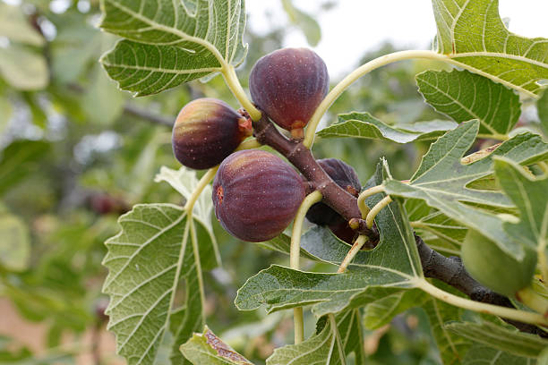
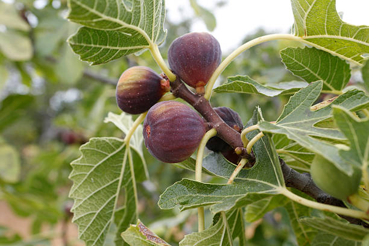
ENGLISH
1] Variety Selection:
Fig trees are available in a range of varieties, so choose one that is suitable for your climate and intended use. Some popular varieties include Brown Turkey, Celeste, and Kadota.
2] Planting:
Fig trees prefer a well-draining soil and should be planted in an area that receives full sun. The planting hole should be deep enough to accommodate the entire root system of the fig tree.
3] Watering and Fertilization:
Fig trees require regular watering and fertilization to ensure healthy growth and fruit development. Watering should be done deeply and less frequently to encourage deep root growth. Fertilizer should be applied based on the nutrient needs of the tree.
4] Mulching:
Fig trees benefit from a layer of mulch around the base of the tree to retain moisture and control weeds.
5] Pruning:
Fig trees should be pruned annually to remove dead or damaged wood and promote healthy growth. Pruning should be done during the dormant season.
6] Pest and Disease Control:
Fig trees can be prone to pests and diseases, so regular monitoring and control measures should be taken to ensure healthy growth and fruit development. Common pests include spider mites and mealybugs.
7] Harvesting:
Figs should be harvested when they are fully ripe and have a soft texture. The fruit should be gently picked from the tree and handled carefully to avoid bruising. Figs can be stored in the refrigerator for a few days.
Overall, growing figs requires patience, attention to detail, and a suitable climate and soil. With proper care, however, fig trees can produce abundant fruit for many years to come.
ENGLISH
తెలుగు
1] వెరైటీ ఎంపిక:
అత్తి చెట్లు అనేక రకాల్లో అందుబాటులో ఉన్నాయి, కాబట్టి మీ వాతావరణం మరియు ఉద్దేశించిన ఉపయోగం కోసం సరిపోయేదాన్ని ఎంచుకోండి. బ్రౌన్ టర్కీ, సెలెస్టే మరియు కడోటా వంటి కొన్ని ప్రసిద్ధ రకాలు.
2] నాటడం:
అంజూరపు చెట్లు బాగా ఎండిపోయే మట్టిని ఇష్టపడతాయి మరియు పూర్తిగా సూర్యరశ్మిని పొందే ప్రదేశంలో నాటాలి. నాటడం రంధ్రం అత్తి చెట్టు యొక్క మొత్తం మూల వ్యవస్థకు అనుగుణంగా తగినంత లోతుగా ఉండాలి.
3] నీరు త్రాగుట మరియు ఫలదీకరణం:
అత్తి చెట్లకు ఆరోగ్యకరమైన పెరుగుదల మరియు పండ్ల అభివృద్ధిని నిర్ధారించడానికి క్రమం తప్పకుండా నీరు త్రాగుట మరియు ఫలదీకరణం అవసరం. లోతైన రూట్ పెరుగుదలను ప్రోత్సహించడానికి నీరు త్రాగుట లోతుగా మరియు తక్కువ తరచుగా చేయాలి. చెట్టు యొక్క పోషక అవసరాల ఆధారంగా ఎరువులు వేయాలి.
4] మల్చింగ్:
అత్తి చెట్లు తేమను నిలుపుకోవటానికి మరియు కలుపు మొక్కలను నియంత్రించడానికి చెట్టు పునాది చుట్టూ రక్షక కవచం నుండి ప్రయోజనం పొందుతాయి.
5] కత్తిరింపు:
చనిపోయిన లేదా దెబ్బతిన్న కలపను తొలగించి ఆరోగ్యవంతమైన పెరుగుదలను ప్రోత్సహించడానికి అత్తి చెట్లను ఏటా కత్తిరించాలి. నిద్రాణమైన కాలంలో కత్తిరింపు చేయాలి.
6] తెగులు మరియు వ్యాధి నియంత్రణ:
అంజూరపు చెట్లు తెగుళ్లు మరియు వ్యాధులకు గురవుతాయి, కాబట్టి ఆరోగ్యకరమైన పెరుగుదల మరియు పండ్ల అభివృద్ధిని నిర్ధారించడానికి క్రమం తప్పకుండా పర్యవేక్షణ మరియు నియంత్రణ చర్యలు తీసుకోవాలి. సాధారణ తెగుళ్లు స్పైడర్ పురుగులు మరియు మీలీబగ్స్.
7] హార్వెస్టింగ్:
అత్తి పండ్లను పూర్తిగా పండిన తర్వాత మరియు మృదువైన ఆకృతిని కలిగి ఉన్నప్పుడు పండించాలి. పండ్లను చెట్టు నుండి మెల్లగా తీయాలి మరియు గాయాలను నివారించడానికి జాగ్రత్తగా నిర్వహించాలి. అత్తి పండ్లను కొన్ని రోజులు రిఫ్రిజిరేటర్లో నిల్వ చేయవచ్చు.
మొత్తంమీద, పెరుగుతున్న అత్తి పండ్లకు సహనం, వివరాలకు శ్రద్ధ మరియు తగిన వాతావరణం మరియు నేల అవసరం. అయితే, సరైన సంరక్షణతో, అంజూరపు చెట్లు అనేక సంవత్సరాలపాటు సమృద్ధిగా ఫలాలను ఇవ్వగలవు.
తెలుగు
అత్తి చెట్లు తేమను నిలుపుకోవటానికి మరియు కలుపు మొక్కలను నియంత్రించడానికి చెట్టు పునాది చుట్టూ రక్షక కవచం నుండి ప్రయోజనం పొందుతాయి.
5] కత్తిరింపు:
చనిపోయిన లేదా దెబ్బతిన్న కలపను తొలగించి ఆరోగ్యవంతమైన పెరుగుదలను ప్రోత్సహించడానికి అత్తి చెట్లను ఏటా కత్తిరించాలి. నిద్రాణమైన కాలంలో కత్తిరింపు చేయాలి.
6] తెగులు మరియు వ్యాధి నియంత్రణ:
అంజూరపు చెట్లు తెగుళ్లు మరియు వ్యాధులకు గురవుతాయి, కాబట్టి ఆరోగ్యకరమైన పెరుగుదల మరియు పండ్ల అభివృద్ధిని నిర్ధారించడానికి క్రమం తప్పకుండా పర్యవేక్షణ మరియు నియంత్రణ చర్యలు తీసుకోవాలి. సాధారణ తెగుళ్లు స్పైడర్ పురుగులు మరియు మీలీబగ్స్.
7] హార్వెస్టింగ్:
అత్తి పండ్లను పూర్తిగా పండిన తర్వాత మరియు మృదువైన ఆకృతిని కలిగి ఉన్నప్పుడు పండించాలి. పండ్లను చెట్టు నుండి మెల్లగా తీయాలి మరియు గాయాలను నివారించడానికి జాగ్రత్తగా నిర్వహించాలి. అత్తి పండ్లను కొన్ని రోజులు రిఫ్రిజిరేటర్లో నిల్వ చేయవచ్చు.
మొత్తంమీద, పెరుగుతున్న అత్తి పండ్లకు సహనం, వివరాలకు శ్రద్ధ మరియు తగిన వాతావరణం మరియు నేల అవసరం. అయితే, సరైన సంరక్షణతో, అంజూరపు చెట్లు అనేక సంవత్సరాలపాటు సమృద్ధిగా ఫలాలను ఇవ్వగలవు.
వినండి
6. PINEAPPLE / 6. అనాస/పైనాపిల్

ENGLISH
1] Planting:
Pineapple is grown from the crown of a mature fruit. To start, twist off the crown from a fully ripe pineapple and remove any excess fruit flesh. Allow the crown to dry for a few days in a warm, dry place.
2] Soil Preparation:
Pineapple prefers well-draining, acidic soil. Before planting, loosen the soil to a depth of about 8 inches and mix in some compost or well-rotted manure.
3] Planting the Crown:
Plant the pineapple crown in a hole that is deep enough to accommodate the entire crown, with the bottom leaves just above the soil surface. Firmly press the soil around the crown to ensure good contact.
4] Watering and Fertilization:
Pineapple requires regular watering and fertilization to ensure healthy growth and fruit development. Watering should be done deeply and less frequently to encourage deep root growth. Fertilizer should be applied based on the nutrient needs of the plant
5] Mulching:
Pineapple benefits from a layer of mulch around the base of the plant to retain moisture and control weeds.
6] Pest and Disease Control:
Pineapple can be prone to pests and diseases, so regular monitoring and control measures should be taken to ensure healthy growth and fruit development. Common pests include mealybugs and scales.
7] Flower Induction:
Pineapple plants will produce a flower stalk after about 20-24 months of growth. To induce flowering, you can expose the plant to ethylene gas or smoke for a short period of time.
8] Harvesting:
Pineapple is ready to be harvested when the fruit is fully ripe and has a sweet aroma. The fruit should be cut from the plant with a sharp knife and handled gently to avoid bruising. Pineapple can be stored for a few days at room temperature or in the refrigerator.
Through The Above process you can produce a healthy Pineapple.
ENGLISH
తెలుగు
1] నాటడం:
పైనాపిల్ పండిన పండు యొక్క కిరీటం నుండి పెరుగుతుంది. ప్రారంభించడానికి, పూర్తిగా పండిన పైనాపిల్ నుండి కిరీటాన్ని తిప్పండి మరియు ఏదైనా అదనపు పండ్ల మాంసాన్ని తొలగించండి. కిరీటం ఒక వెచ్చని, పొడి ప్రదేశంలో కొన్ని రోజులు పొడిగా ఉండటానికి అనుమతించండి.
2] నేల తయారీ:
పైనాపిల్ బాగా ఎండిపోయే, ఆమ్ల మట్టిని ఇష్టపడుతుంది. నాటడానికి ముందు, మట్టిని సుమారు 8 అంగుళాల లోతు వరకు విప్పు మరియు కొంత కంపోస్ట్ లేదా బాగా కుళ్ళిన ఎరువులో కలపండి.
3] కిరీటాన్ని నాటడం:
పైనాపిల్ కిరీటాన్ని మొత్తం కిరీటానికి సరిపోయేంత లోతైన రంధ్రంలో నాటండి, దిగువ ఆకులు నేల ఉపరితలంపై ఉంటాయి. మంచి పరిచయాన్ని నిర్ధారించడానికి కిరీటం చుట్టూ ఉన్న మట్టిని గట్టిగా నొక్కండి.
4] నీరు త్రాగుట మరియు ఫలదీకరణం:
పైనాపిల్ ఆరోగ్యకరమైన పెరుగుదల మరియు పండ్ల అభివృద్ధిని నిర్ధారించడానికి క్రమం తప్పకుండా నీరు త్రాగుట మరియు ఫలదీకరణం అవసరం. లోతైన రూట్ పెరుగుదలను ప్రోత్సహించడానికి నీరు త్రాగుట లోతుగా మరియు తక్కువ తరచుగా చేయాలి. మొక్క యొక్క పోషక అవసరాల ఆధారంగా ఎరువులు వేయాలి.
5] మల్చింగ్:
పైనాపిల్ తేమను నిలుపుకోవడం మరియు కలుపు మొక్కలను నియంత్రించడం కోసం మొక్క యొక్క పునాది చుట్టూ రక్షక కవచం నుండి ప్రయోజనం పొందుతుంది.
6] తెగులు మరియు వ్యాధుల నియంత్రణ:
పైనాపిల్ తెగుళ్ళు మరియు వ్యాధులకు గురవుతుంది, కాబట్టి ఆరోగ్యకరమైన పెరుగుదల మరియు పండ్ల అభివృద్ధిని నిర్ధారించడానికి క్రమం తప్పకుండా పర్యవేక్షణ మరియు నియంత్రణ చర్యలు తీసుకోవాలి. సాధారణ తెగుళ్లు మీలీబగ్స్ మరియు స్కేల్స్ ఉన్నాయి.
7] ఫ్లవర్ ఇండక్షన్:
పైనాపిల్ మొక్కలు సుమారు 20-24 నెలల ఎదుగుదల తర్వాత పూల కొమ్మను ఉత్పత్తి చేస్తాయి. పుష్పించేలా ప్రేరేపించడానికి, మీరు మొక్కను ఇథిలీన్ వాయువు లేదా పొగకు కొద్దిసేపు బహిర్గతం చేయవచ్చు.
8] హార్వెస్టింగ్:
పండు పూర్తిగా పక్వానికి వచ్చి తీపి వాసన కలిగి ఉన్నప్పుడు పైనాపిల్ కోతకు సిద్ధంగా ఉంటుంది. పండ్లను మొక్క నుండి పదునైన కత్తితో కత్తిరించాలి మరియు గాయాలను నివారించడానికి సున్నితంగా నిర్వహించాలి. పైనాపిల్ను గది ఉష్ణోగ్రత వద్ద లేదా రిఫ్రిజిరేటర్లో కొన్ని రోజులు నిల్వ చేయవచ్చు.
పై ప్రక్రియ ద్వారా మీరు ఆరోగ్యకరమైన పైనాపిల్ను ఉత్పత్తి చేయవచ్చు.
తెలుగు
వినండి
7. CUSTARDAPPLE / 7. సీతాఫలం
 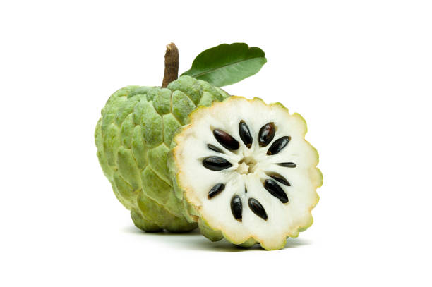
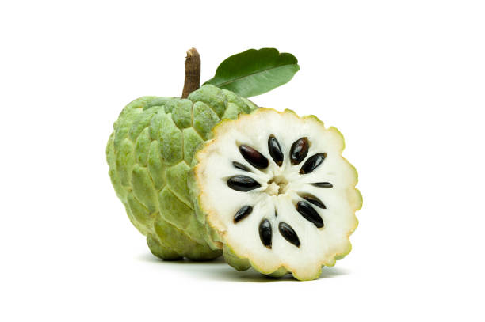

ENGLISH
1] Variety Selection:
Custard apple can be grown from seeds, but it's recommended to use a grafted plant from a healthy tree of a desired variety. There are many different custard apple varieties available, so choose one that is suitable for your climate and intended use.
2] Planting:
Custard apple prefers a well-draining soil and should be planted in an area that receives full sun. The planting hole should be deep enough to accommodate the entire root system of the custard apple tree.
3] Watering and Fertilization:
Custard apple requires regular watering and fertilization to ensure healthy growth and fruit development. Watering should be done deeply and less frequently to encourage deep root growth. Fertilizer should be applied based on the nutrient needs of the tree.
4] Mulching:
Custard apple benefits from a layer of mulch around the base of the tree to retain moisture and control weeds.
5] Pruning:
Custard apple should be pruned regularly to remove dead or damaged wood and promote healthy growth. Pruning should be done during the dormant season.
6] Pest and Disease Control:
Custard apple can be prone to pests and diseases, so regular monitoring and control measures should be taken to ensure healthy growth and fruit development. Common pests include scale insects, mealybugs, and fruit flies.
7] Harvesting:
Custard apple should be harvested when the fruit is fully mature and has a sweet aroma. The fruit should be cut from the tree with a sharp knife and handled gently to avoid bruising. Custard apple can be stored for a few days at room temperature or in the refrigerator.
By following these steps, you will be able to grow healthy and Nutritious Custard apple.
ENGLISH
తెలుగు
1] వెరైటీ ఎంపిక:
సీతాఫలాన్ని గింజల నుండి పెంచవచ్చు, కానీ కోరుకున్న రకం ఆరోగ్యకరమైన చెట్టు నుండి అంటు వేసిన మొక్కను ఉపయోగించడం మంచిది. అనేక రకాల సీతాఫలాలు అందుబాటులో ఉన్నాయి, కాబట్టి మీ వాతావరణానికి మరియు ఉద్దేశించిన ఉపయోగానికి సరిపోయేదాన్ని ఎంచుకోండి.
2] నాటడం:
సీతాఫలం బాగా ఎండిపోయే మట్టిని ఇష్టపడుతుంది మరియు పూర్తిగా ఎండ వచ్చే ప్రదేశంలో నాటాలి. సీతాఫలం చెట్టు యొక్క మొత్తం మూల వ్యవస్థకు అనుగుణంగా నాటడం రంధ్రం లోతుగా ఉండాలి.
3] నీరు త్రాగుట మరియు ఫలదీకరణం:
సీతాఫలం ఆరోగ్యకరమైన పెరుగుదల మరియు పండ్ల అభివృద్ధిని నిర్ధారించడానికి క్రమం తప్పకుండా నీరు త్రాగుట మరియు ఫలదీకరణం అవసరం. లోతైన రూట్ పెరుగుదలను ప్రోత్సహించడానికి నీరు త్రాగుట లోతుగా మరియు తక్కువ తరచుగా చేయాలి. చెట్టు యొక్క పోషక అవసరాల ఆధారంగా ఎరువులు వేయాలి.
4] మల్చింగ్:
సీతాఫలం తేమను నిలుపుకోవడానికి మరియు కలుపు మొక్కలను నియంత్రించడానికి చెట్టు పునాది చుట్టూ రక్షక కవచం నుండి ప్రయోజనం పొందుతుంది.
5] కత్తిరింపు:
చనిపోయిన లేదా దెబ్బతిన్న కలపను తొలగించి ఆరోగ్యకరమైన పెరుగుదలను ప్రోత్సహించడానికి సీతాఫలాన్ని క్రమం తప్పకుండా కత్తిరించాలి. నిద్రాణమైన కాలంలో కత్తిరింపు చేయాలి.
6] తెగులు మరియు వ్యాధుల నియంత్రణ:
సీతాఫలం తెగుళ్లు మరియు వ్యాధులకు గురవుతుంది, కాబట్టి ఆరోగ్యకరమైన పెరుగుదల మరియు పండ్ల అభివృద్ధిని నిర్ధారించడానికి క్రమం తప్పకుండా పర్యవేక్షణ మరియు నియంత్రణ చర్యలు తీసుకోవాలి. సాధారణ తెగుళ్లలో స్కేల్ కీటకాలు, మీలీబగ్స్ మరియు పండ్ల ఈగలు ఉన్నాయి.
7] హార్వెస్టింగ్:
సీతాఫలం పూర్తిగా పరిపక్వం చెంది, తీపి వాసన కలిగినప్పుడు సీతాఫలాన్ని కోయాలి. పండ్లను చెట్టు నుండి పదునైన కత్తితో కత్తిరించాలి మరియు గాయాలను నివారించడానికి సున్నితంగా నిర్వహించాలి. సీతాఫలాన్ని గది ఉష్ణోగ్రత వద్ద లేదా రిఫ్రిజిరేటర్లో కొన్ని రోజులు నిల్వ చేయవచ్చు.
ఈ దశలను అనుసరించడం ద్వారా, మీరు ఆరోగ్యకరమైన మరియు పోషకమైన సీతాఫలాన్ని పండించగలరు.
తెలుగు
వినండి
8.JACKFRUIT / 8. పనసపండు
ENGLISH
1] Variety Selection:
Jackfruit can be grown from seeds or by grafting, but it's recommended to use a graft from a healthy tree of a desired variety. There are many different jackfruit varieties available, so choose one that is suitable for your climate and intended use.
2] Planting:
Jackfruit prefers a well-draining soil and should be planted in an area that receives full sun. The planting hole should be deep enough to accommodate the entire root system of the jackfruit tree.
3] Watering and Fertilization:
Jackfruit requires regular watering and fertilization to ensure healthy growth and fruit development. Watering should be done deeply and less frequently to encourage deep root growth. Fertilizer should be applied based on the nutrient needs of the tree.
4] Mulching:
Jackfruit benefits from a layer of mulch around the base of the tree to retain moisture and control weeds.
5] Pruning:
Jackfruit should be pruned regularly to remove dead or damaged wood and promote healthy growth. Pruning should be done during the dormant season.
6] Pest and Disease Control:
Jackfruit can be prone to pests and diseases, so regular monitoring and control measures should be taken to ensure healthy growth and fruit development. Common pests include scale insects, mealybugs, and fruit flies.
7] Harvesting:
Jackfruit should be harvested when the fruit is fully mature and has a sweet aroma. The fruit should be cut from the tree with a sharp knife and handled gently to avoid bruising. Jackfruit can be stored for a few days at room temperature or in the refrigerator.
Overall, growing jackfruit requires patience, attention to detail, and a suitable climate and soil. With proper care, however, jackfruit trees can provide abundant fruit for many years to come.
ENGLISH
తెలుగు
1] వెరైటీ ఎంపిక:
జాక్ఫ్రూట్ను విత్తనాల నుండి లేదా అంటుకట్టుట ద్వారా పెంచవచ్చు, అయితే కావలసిన రకం ఆరోగ్యకరమైన చెట్టు నుండి అంటుకట్టుటను ఉపయోగించడం మంచిది. అనేక రకాల జాక్ఫ్రూట్ రకాలు అందుబాటులో ఉన్నాయి, కాబట్టి మీ వాతావరణం మరియు ఉద్దేశించిన ఉపయోగం కోసం సరిపోయేదాన్ని ఎంచుకోండి.
2] నాటడం:
జాక్ఫ్రూట్ బాగా ఎండిపోయే మట్టిని ఇష్టపడుతుంది మరియు పూర్తిగా సూర్యరశ్మిని పొందే ప్రదేశంలో నాటాలి. జాక్ఫ్రూట్ చెట్టు యొక్క మొత్తం మూల వ్యవస్థకు అనుగుణంగా నాటడం రంధ్రం తగినంత లోతుగా ఉండాలి.
3] నీరు త్రాగుట మరియు ఫలదీకరణం:
జాక్ఫ్రూట్ ఆరోగ్యకరమైన పెరుగుదల మరియు పండ్ల అభివృద్ధిని నిర్ధారించడానికి క్రమం తప్పకుండా నీరు త్రాగుట మరియు ఫలదీకరణం అవసరం. లోతైన రూట్ పెరుగుదలను ప్రోత్సహించడానికి నీరు త్రాగుట లోతుగా మరియు తక్కువ తరచుగా చేయాలి. చెట్టు యొక్క పోషక అవసరాల ఆధారంగా ఎరువులు వేయాలి.
4] మల్చింగ్:
తేమను నిలుపుకోవడానికి మరియు కలుపు మొక్కలను నియంత్రించడానికి చెట్టు అడుగుభాగం చుట్టూ కప్పడం ద్వారా జాక్ఫ్రూట్ ప్రయోజనం పొందుతుంది.
5] కత్తిరింపు:
చనిపోయిన లేదా దెబ్బతిన్న కలపను తొలగించి ఆరోగ్యవంతమైన పెరుగుదలను ప్రోత్సహించడానికి జాక్ఫ్రూట్ను క్రమం తప్పకుండా కత్తిరించాలి. నిద్రాణమైన కాలంలో కత్తిరింపు చేయాలి.
6] తెగులు మరియు వ్యాధుల నియంత్రణ:
జాక్ఫ్రూట్ తెగుళ్లు మరియు వ్యాధులకు గురవుతుంది, కాబట్టి ఆరోగ్యకరమైన పెరుగుదల మరియు పండ్ల అభివృద్ధిని నిర్ధారించడానికి క్రమం తప్పకుండా పర్యవేక్షణ మరియు నియంత్రణ చర్యలు తీసుకోవాలి. సాధారణ తెగుళ్లలో స్కేల్ కీటకాలు, మీలీబగ్స్ మరియు పండ్ల ఈగలు ఉన్నాయి.
7] హార్వెస్టింగ్:
పండు పూర్తిగా పరిపక్వం చెంది, తీపి వాసన కలిగినప్పుడు జాక్ఫ్రూట్ను కోయాలి. పండ్లను చెట్టు నుండి పదునైన కత్తితో కత్తిరించాలి మరియు గాయాలను నివారించడానికి సున్నితంగా నిర్వహించాలి. జాక్ఫ్రూట్ను గది ఉష్ణోగ్రత వద్ద లేదా రిఫ్రిజిరేటర్లో కొన్ని రోజులు నిల్వ చేయవచ్చు.
పండు పూర్తిగా పరిపక్వం చెంది, తీపి వాసన కలిగినప్పుడు జాక్ఫ్రూట్ను కోయాలి. పండ్లను చెట్టు నుండి పదునైన కత్తితో కత్తిరించాలి మరియు గాయాలను నివారించడానికి సున్నితంగా నిర్వహించాలి. జాక్ఫ్రూట్ను గది ఉష్ణోగ్రత వద్ద లేదా రిఫ్రిజిరేటర్లో కొన్ని రోజులు నిల్వ చేయవచ్చు.
తెలుగు
వినండి
9. BANANA / 9. అరటిపండు


ENGLISH
1] Variety Selection:
Bananas can be grown from seeds, but it's recommended to use suckers or rhizomes from a healthy banana plant of a desired variety. There are many different banana varieties available, so choose one that is suitable for your climate and intended use.
2] Planting:
Bananas prefer a well-draining soil and should be planted in an area that receives full sun. The planting hole should be deep enough to accommodate the entire root system of the banana plant.
3] Watering and Fertilization:
Bananas require regular watering and fertilization to ensure healthy growth and fruit development. Watering should be done deeply and less frequently to encourage deep root growth. Fertilizer should be applied based on the nutrient needs of the plant.
4] Mulching:
Bananas benefit from a layer of mulch around the base of the plant to retain moisture and control weeds.
5] Pest and Disease Control:
Bananas can be prone to pests and diseases, so regular monitoring and control measures should be taken to ensure healthy growth and fruit development. Common pests include aphids, spider mites, and banana weevils.
6] Pruning:
Bananas should be pruned regularly to remove old leaves and promote healthy growth. The leaves can be used as mulch or compost.
7] Harvesting:
Bananas should be harvested when they are fully ripe and have a yellow color. They should be handled gently to avoid bruising. Bananas can be stored for a few days at room temperature or in the refrigerator.
Overall, growing bananas requires patience, attention to detail, and a suitable climate and soil. With proper care, however, banana plants can provide abundant fruit for many years to come.
ENGLISH
తెలుగు
1] వెరైటీ ఎంపిక:
అరటిపండ్లను గింజల నుండి పెంచవచ్చు, కానీ కోరుకున్న రకానికి చెందిన ఆరోగ్యకరమైన అరటి మొక్క నుండి సక్కర్స్ లేదా రైజోమ్లను ఉపయోగించడం మంచిది. అనేక రకాల అరటి రకాలు అందుబాటులో ఉన్నాయి, కాబట్టి మీ వాతావరణానికి మరియు ఉద్దేశించిన ఉపయోగానికి సరిపోయేదాన్ని ఎంచుకోండి.
2] నాటడం:
అరటిపండ్లు బాగా ఎండిపోయే మట్టిని ఇష్టపడతాయి మరియు పూర్తిగా సూర్యరశ్మిని పొందే ప్రదేశంలో నాటాలి. అరటి మొక్క యొక్క మొత్తం మూల వ్యవస్థకు అనుగుణంగా నాటడం రంధ్రం లోతుగా ఉండాలి.
3] నీరు త్రాగుట మరియు ఫలదీకరణం:
అరటిపండ్లు ఆరోగ్యకరమైన పెరుగుదల మరియు పండ్ల అభివృద్ధిని నిర్ధారించడానికి క్రమం తప్పకుండా నీరు త్రాగుట మరియు ఫలదీకరణం అవసరం. లోతైన రూట్ పెరుగుదలను ప్రోత్సహించడానికి నీరు త్రాగుట లోతుగా మరియు తక్కువ తరచుగా చేయాలి. మొక్క యొక్క పోషక అవసరాల ఆధారంగా ఎరువులు వేయాలి.
4] మల్చింగ్:
తేమను నిలుపుకోవడానికి మరియు కలుపు మొక్కలను నియంత్రించడానికి అరటిపండ్లు మొక్క అడుగుభాగం చుట్టూ కప్పడం వల్ల ప్రయోజనం పొందుతాయి.
5] తెగులు మరియు వ్యాధుల నియంత్రణ:
అరటిపండ్లు తెగుళ్లు మరియు వ్యాధులకు గురవుతాయి, కాబట్టి ఆరోగ్యకరమైన పెరుగుదల మరియు పండ్ల అభివృద్ధిని నిర్ధారించడానికి క్రమం తప్పకుండా పర్యవేక్షణ మరియు నియంత్రణ చర్యలు తీసుకోవాలి. సాధారణ తెగుళ్లలో అఫిడ్స్, స్పైడర్ పురుగులు మరియు అరటి వీవిల్స్ ఉన్నాయి.
6] కత్తిరింపు:
పాత ఆకులను తొలగించి ఆరోగ్యకరమైన పెరుగుదలను ప్రోత్సహించడానికి అరటిని క్రమం తప్పకుండా కత్తిరించాలి. ఆకులను మల్చ్ లేదా కంపోస్టుగా ఉపయోగించవచ్చు.
7] కోత:
అరటిపండ్లు పూర్తిగా పక్వానికి వచ్చి పసుపు రంగులో ఉన్నప్పుడు కోయాలి. గాయాలను నివారించడానికి వాటిని సున్నితంగా నిర్వహించాలి. అరటిపండ్లను గది ఉష్ణోగ్రత వద్ద లేదా రిఫ్రిజిరేటర్లో కొన్ని రోజులు నిల్వ చేయవచ్చు.
మొత్తంమీద, అరటిపండ్లు పెరగడానికి సహనం, వివరాలకు శ్రద్ధ మరియు తగిన వాతావరణం మరియు నేల అవసరం. అయితే, సరైన సంరక్షణతో, అరటి మొక్కలు చాలా సంవత్సరాల పాటు సమృద్ధిగా ఫలాలను అందిస్తాయి.
తెలుగు
వినండి
10. GRAPES / 10. ద్రాక్ష

ENGLISH
1] Variety Selection:
Grapes can be grown from seeds, but it's recommended to use cuttings from a healthy vine of a desired variety. There are many different grape varieties available, so choose one that is suitable for your climate and intended use.
2] Planting:
Grapes prefer a well-draining soil and should be planted in an area that receives full sun. The planting hole should be deep enough to accommodate the entire root system of the grapevine.
3] Training:
Grapes are typically trained to grow on a trellis or support structure to save space and increase airflow. The vine should be tied to the support structure and trained to grow upward.
4] Pruning:
Grapes should be pruned annually to remove diseased or damaged wood and to control the size and shape of the vine. Pruning should be done during the dormant season.
5] Watering and Fertilization:
Grapes require regular watering and fertilization to ensure healthy growth and fruit development. Watering should be done deeply and less frequently to encourage deep root growth. Fertilizer should be applied based on the soil type and nutrient needs of the vine.
6] Pest and Disease Control:
Grapes can be prone to pests and diseases, so regular monitoring and control measures should be taken to ensure healthy growth and fruit development. Common pests include aphids, spider mites, and grape berry moths.
7] Harvesting:
Grapes should be harvested when they are fully ripe and have a sweet flavor. They should be handled gently to avoid bruising. Grapes can be stored for a few days at room temperature or in the refrigerator.
Overall, growing grapes requires patience, attention to detail, and a suitable climate and soil. With proper care, however, grapevines can provide abundant fruit for many years to come.
ENGLISH
తెలుగు
1] వెరైటీ ఎంపిక:
ద్రాక్షను విత్తనాల నుండి పెంచవచ్చు, కానీ కావలసిన రకం యొక్క ఆరోగ్యకరమైన తీగ నుండి కోతలను ఉపయోగించడం మంచిది. అనేక రకాల ద్రాక్ష రకాలు అందుబాటులో ఉన్నాయి, కాబట్టి మీ వాతావరణం మరియు ఉద్దేశించిన ఉపయోగం కోసం సరిపోయేదాన్ని ఎంచుకోండి.
2] నాటడం:
ద్రాక్ష బాగా ఎండిపోయే మట్టిని ఇష్టపడుతుంది మరియు పూర్తిగా సూర్యరశ్మిని పొందే ప్రదేశంలో నాటాలి. నాటడం రంధ్రం ద్రాక్షపండు యొక్క మొత్తం మూల వ్యవస్థకు అనుగుణంగా తగినంత లోతుగా ఉండాలి.
3] శిక్షణ:
ద్రాక్ష సాధారణంగా స్థలాన్ని ఆదా చేయడానికి మరియు గాలి ప్రవాహాన్ని పెంచడానికి ట్రేల్లిస్ లేదా సహాయక నిర్మాణంపై పెరగడానికి శిక్షణ పొందుతుంది. తీగను సపోర్టు స్ట్రక్చర్కు కట్టి పైకి ఎదగడానికి శిక్షణ ఇవ్వాలి.
4] కత్తిరింపు:
వ్యాధి లేదా దెబ్బతిన్న కలపను తొలగించడానికి మరియు తీగ పరిమాణం మరియు ఆకారాన్ని నియంత్రించడానికి ద్రాక్షను ఏటా కత్తిరించాలి. నిద్రాణమైన కాలంలో కత్తిరింపు చేయాలి.<
5] నీరు త్రాగుట మరియు ఫలదీకరణం:
ఆరోగ్యకరమైన పెరుగుదల మరియు పండ్ల అభివృద్ధిని నిర్ధారించడానికి ద్రాక్షకు క్రమం తప్పకుండా నీరు త్రాగుట మరియు ఫలదీకరణం అవసరం. లోతైన రూట్ పెరుగుదలను ప్రోత్సహించడానికి నీరు త్రాగుట లోతుగా మరియు తక్కువ తరచుగా చేయాలి. నేల రకం మరియు తీగ యొక్క పోషక అవసరాల ఆధారంగా ఎరువులు వేయాలి.
6] తెగులు మరియు వ్యాధి నియంత్రణ:
ద్రాక్ష తెగుళ్లు మరియు వ్యాధులకు గురవుతుంది, కాబట్టి ఆరోగ్యకరమైన పెరుగుదల మరియు పండ్ల అభివృద్ధిని నిర్ధారించడానికి క్రమం తప్పకుండా పర్యవేక్షణ మరియు నియంత్రణ చర్యలు తీసుకోవాలి. సాధారణ తెగుళ్లు అఫిడ్స్, సాలీడు పురుగులు మరియు ద్రాక్ష బెర్రీ చిమ్మటలు.
7] హార్వెస్టింగ్:
ద్రాక్ష పూర్తిగా పండిన తర్వాత మరియు తీపి రుచిని కలిగి ఉన్నప్పుడు పండించాలి. గాయాలను నివారించడానికి వాటిని సున్నితంగా నిర్వహించాలి. ద్రాక్షను గది ఉష్ణోగ్రత వద్ద లేదా రిఫ్రిజిరేటర్లో కొన్ని రోజులు నిల్వ చేయవచ్చు.
మొత్తంమీద, ద్రాక్షను పండించడానికి సహనం, వివరాలకు శ్రద్ధ మరియు తగిన వాతావరణం మరియు నేల అవసరం. అయితే, సరైన సంరక్షణతో, ద్రాక్షపండ్లు అనేక సంవత్సరాలపాటు సమృద్ధిగా ఫలాలను అందిస్తాయి.
తెలుగు
వినండి
11. MUSKMELON / 11. ఖర్బూజ


ENGLISH
1] Seed Selection:
Muskmelon seeds can be purchased from a reputable nursery or extracted from a ripe and healthy muskmelon. Select seeds that are plump and firm, and have a good germination rate.
2] Germination:
Muskmelon seeds should be planted directly in the ground or in a pot filled with a mixture of soil and organic compost. The seeds require warm soil temperature to germinate, around 21-27°C (70-80°F). The seeds typically sprout within 7-10 days.
3] Seedling Care:
Muskmelon seedlings require regular watering and fertilization to ensure healthy growth. They should be kept in a well-draining soil, and protected from strong winds and frost.
4] Transplanting:
Once the muskmelon seedlings reach a height of 10-15 cm (4-6 inches) with 2-4 true leaves, they can be transplanted to their final location in the ground. Muskmelon plants require full sun and well-drained soil with a pH between 6.0 and 6.8.
5] Watering and Fertilization:
Muskmelon plants require regular watering, especially during the fruiting stage. They also require regular fertilization with a balanced fertilizer to promote healthy growth and fruit development.
6] Pollination:
Muskmelon plants require pollination to set fruit. This can be achieved by natural pollinators like bees, or by manually transferring pollen from the male flowers to the female flowers using a small paintbrush.
7] Trellising and Pruning:
Muskmelon plants can be trained to grow on a trellis or support structure to save space and increase airflow. Pruning can also be done to remove diseased or damaged leaves and stems.
8] Harvesting and Storage:
Muskmelon should be harvested when they are fully ripened and have a sweet fragrance. They should be handled gently as they are easily bruised. Muskmelon fruit can be stored for a few days at room temperature or in the refrigerator.
Overall, growing muskmelon requires patience, attention to detail, and a suitable climate and soil. With proper care, however, muskmelon plants can provide abundant fruit for many years to come.
ENGLISH
Muskmelon plants can be trained to grow on a trellis or support structure to save space and increase airflow. Pruning can also be done to remove diseased or damaged leaves and stems.
8] Harvesting and Storage:
Muskmelon should be harvested when they are fully ripened and have a sweet fragrance. They should be handled gently as they are easily bruised. Muskmelon fruit can be stored for a few days at room temperature or in the refrigerator.
Overall, growing muskmelon requires patience, attention to detail, and a suitable climate and soil. With proper care, however, muskmelon plants can provide abundant fruit for many years to come.
తెలుగు
1] విత్తన ఎంపిక:
ఖర్బూజ గింజలను ప్రసిద్ధ నర్సరీ నుండి కొనుగోలు చేయవచ్చు లేదా పండిన మరియు ఆరోగ్యకరమైన సీతాఫలం నుండి సేకరించవచ్చు. బొద్దుగా మరియు దృఢంగా ఉండే విత్తనాలను ఎంచుకోండి మరియు మంచి అంకురోత్పత్తి రేటు ఉంటుంది.
2] అంకురోత్పత్తి:
ఖర్బూజ విత్తనాలను నేరుగా భూమిలో లేదా మట్టి మరియు సేంద్రీయ కంపోస్ట్ మిశ్రమంతో నింపిన కుండలో నాటాలి. విత్తనాలు మొలకెత్తడానికి వెచ్చని నేల ఉష్ణోగ్రత అవసరం, సుమారు 21-27°C (70-80°F). విత్తనాలు సాధారణంగా 7-10 రోజులలో మొలకెత్తుతాయి.
3] మొలకల సంరక్షణ:
ఖర్బూజ మొలకల ఆరోగ్యకరమైన పెరుగుదలను నిర్ధారించడానికి క్రమం తప్పకుండా నీరు త్రాగుట మరియు ఫలదీకరణం అవసరం. వాటిని బాగా ఎండిపోయే మట్టిలో ఉంచాలి మరియు బలమైన గాలులు మరియు మంచు నుండి రక్షించబడాలి.
4] మార్పిడి:
ఖర్బూజ మొలకలు 2-4 నిజమైన ఆకులతో 10-15 సెం.మీ (4-6 అంగుళాలు) ఎత్తుకు చేరుకున్న తర్వాత, వాటిని భూమిలో వాటి చివరి స్థానానికి నాటుకోవచ్చు. సీతాఫలం మొక్కలకు 6.0 మరియు 6.8 మధ్య pH ఉన్న పూర్తి సూర్యుడు మరియు బాగా ఎండిపోయిన నేల అవసరం.
5] నీరు త్రాగుట మరియు ఫలదీకరణం:
ఖర్బూజ మొక్కలు ముఖ్యంగా ఫలాలు కాస్తాయి దశలో క్రమం తప్పకుండా నీరు త్రాగుటకు లేక అవసరం. ఆరోగ్యకరమైన ఎదుగుదల మరియు పండ్ల అభివృద్ధిని ప్రోత్సహించడానికి సమతుల్య ఎరువులతో క్రమం తప్పకుండా ఫలదీకరణం కూడా అవసరం.
6] పరాగసంపర్కం:
ఖర్బూజ మొక్కలు ఫలాలను ఇవ్వడానికి పరాగసంపర్కం అవసరం. తేనెటీగలు వంటి సహజ పరాగ సంపర్కాల ద్వారా లేదా చిన్న పెయింట్ బ్రష్ని ఉపయోగించి మగ పువ్వుల నుండి ఆడ పువ్వులకు పుప్పొడిని మానవీయంగా బదిలీ చేయడం ద్వారా దీనిని సాధించవచ్చు.
7] ట్రేల్లిసింగ్ మరియు కత్తిరింపు:
స్థలాన్ని ఆదా చేయడానికి మరియు గాలి ప్రవాహాన్ని పెంచడానికి ఖర్బూజ మొక్కలు ట్రేల్లిస్ లేదా సపోర్ట్ స్ట్రక్చర్పై పెరగడానికి శిక్షణ పొందవచ్చు. వ్యాధి లేదా దెబ్బతిన్న ఆకులు మరియు కాండం తొలగించడానికి కూడా కత్తిరింపు చేయవచ్చు.
8] కోత మరియు నిల్వ:
సీతాఫలం పూర్తిగా పండిన తర్వాత మరియు తీపి సువాసన కలిగి ఉన్నప్పుడు పండించాలి. అవి సులభంగా గాయపడినందున వాటిని సున్నితంగా నిర్వహించాలి. పుచ్చకాయ పండును గది ఉష్ణోగ్రత వద్ద లేదా రిఫ్రిజిరేటర్లో కొన్ని రోజులు నిల్వ చేయవచ్చు.
మొత్తంమీద, ఖర్బూజ పెరగడానికి సహనం, వివరాలకు శ్రద్ధ మరియు తగిన వాతావరణం మరియు నేల అవసరం. అయితే, సరైన సంరక్షణతో, ఖర్బూజ మొక్కలు చాలా సంవత్సరాల పాటు సమృద్ధిగా ఫలాలను అందించగలవు.
తెలుగు
వినండి
12.WATERMELON / 12. పుచ్చకాయ


ENGLISH
1] Seed Selection:
Watermelon seeds can be purchased from a reputable nursery or extracted from a healthy, ripe watermelon. Select seeds that are plump and firm, and have a good germination rate.
2] Germination:
Watermelon seeds should be planted directly in the ground or in a pot filled with a mixture of soil and organic compost. The seeds require warm soil temperature to germinate, around 24-27°C (75-81°F). The seeds typically sprout within 7-10 days.
3] Seedling Care:
Watermelon seedlings require regular watering and fertilization to ensure healthy growth. They should be kept in a well-draining soil, and protected from strong winds and frost.
4] Transplanting:
Once the watermelon seedlings reach a height of 10-15 cm (4-6 inches) with 2-4 true leaves, they can be transplanted to their final location in the ground. Watermelon plants require full sun and well-drained soil with a pH between 6.0 and 6.8.
5] Watering and Fertilization:
Watermelon plants require regular watering, especially during the fruiting stage. They also require regular fertilization with a balanced fertilizer to promote healthy growth and fruit development.
6] Pollination:
Watermelon plants require pollination to set fruit. This can be achieved by natural pollinators like bees, or by manually transferring pollen from the male flowers to the female flowers using a small paintbrush.
7] Harvesting and Storage:
Watermelon should be harvested when they are fully ripened and have a dull green skin with a cream or yellow-colored bottom. They should be handled gently as they are easily bruised. Watermelon fruit can be stored for a few days at room temperature or in the refrigerator.
Overall, growing watermelon requires patience, attention to detail, and a suitable climate and soil. With proper care, however, watermelon plants can provide abundant fruit for many years to come.
ENGLISH
తెలుగు
1] విత్తన ఎంపిక:
పుచ్చకాయ గింజలను ప్రసిద్ధ నర్సరీ నుండి కొనుగోలు చేయవచ్చు లేదా ఆరోగ్యకరమైన, పండిన పుచ్చకాయ నుండి సేకరించవచ్చు. బొద్దుగా మరియు దృఢంగా ఉండే విత్తనాలను ఎంచుకోండి మరియు మంచి అంకురోత్పత్తి రేటు ఉంటుంది.
2] అంకురోత్పత్తి:
పుచ్చకాయ విత్తనాలను నేరుగా భూమిలో లేదా మట్టి మరియు సేంద్రీయ కంపోస్ట్ మిశ్రమంతో నింపిన కుండలో నాటాలి. విత్తనాలు మొలకెత్తడానికి వెచ్చని నేల ఉష్ణోగ్రత అవసరం, సుమారు 24-27°C (75-81°F). విత్తనాలు సాధారణంగా 7-10 రోజులలో మొలకెత్తుతాయి.
3] మొలకల సంరక్షణ:
పుచ్చకాయ మొలకల ఆరోగ్యకరమైన పెరుగుదలను నిర్ధారించడానికి క్రమం తప్పకుండా నీరు త్రాగుట మరియు ఫలదీకరణం అవసరం. వాటిని బాగా ఎండిపోయే మట్టిలో ఉంచాలి మరియు బలమైన గాలులు మరియు మంచు నుండి రక్షించబడాలి.
4] మార్పిడి:
పుచ్చకాయ మొలకలు 2-4 నిజమైన ఆకులతో 10-15 సెం.మీ (4-6 అంగుళాలు) ఎత్తుకు చేరుకున్న తర్వాత, వాటిని భూమిలో వాటి చివరి స్థానానికి నాటుకోవచ్చు. పుచ్చకాయ మొక్కలకు 6.0 మరియు 6.8 మధ్య pH ఉన్న పూర్తి సూర్యుడు మరియు బాగా ఎండిపోయిన నేల అవసరం.
5] నీరు త్రాగుట మరియు ఫలదీకరణం:
పుచ్చకాయ మొక్కలకు క్రమం తప్పకుండా నీరు త్రాగుట అవసరం, ముఖ్యంగా ఫలాలు కాస్తాయి. ఆరోగ్యకరమైన ఎదుగుదల మరియు పండ్ల అభివృద్ధిని ప్రోత్సహించడానికి సమతుల్య ఎరువులతో క్రమం తప్పకుండా ఫలదీకరణం కూడా అవసరం.
6] పరాగసంపర్కం:
పుచ్చకాయ మొక్కలు ఫలాలను ఇవ్వడానికి పరాగసంపర్కం అవసరం. తేనెటీగలు వంటి సహజ పరాగ సంపర్కాల ద్వారా లేదా చిన్న పెయింట్ బ్రష్ని ఉపయోగించి మగ పువ్వుల నుండి ఆడ పువ్వులకు పుప్పొడిని మానవీయంగా బదిలీ చేయడం ద్వారా దీనిని సాధించవచ్చు.
7] హార్వెస్టింగ్ మరియు నిల్వ:
పుచ్చకాయ పూర్తిగా పక్వానికి వచ్చినప్పుడు మరియు ఒక క్రీమ్ లేదా పసుపు-రంగు దిగువన ఉన్న నిస్తేజమైన ఆకుపచ్చ చర్మాన్ని కలిగి ఉన్నప్పుడు కోయాలి. అవి సులభంగా గాయపడినందున వాటిని సున్నితంగా నిర్వహించాలి. పుచ్చకాయ పండును గది ఉష్ణోగ్రత వద్ద లేదా రిఫ్రిజిరేటర్లో కొన్ని రోజులు నిల్వ చేయవచ్చు.
మొత్తంమీద, పెరుగుతున్న పుచ్చకాయకు సహనం, వివరాలకు శ్రద్ధ మరియు తగిన వాతావరణం మరియు నేల అవసరం. అయితే, సరైన సంరక్షణతో, పుచ్చకాయ మొక్కలు చాలా సంవత్సరాల పాటు సమృద్ధిగా ఫలాలను అందిస్తాయి.
తెలుగు
వినండి
13. PAPAYA / 13.బొప్పాయి


ENGLISH
1] Seed Selection:
Papaya seeds are extracted from ripe and healthy fruits, which are cut open to extract the seeds. The seeds should be cleaned and dried for a day or two before planting.
2] Germination:
The papaya seeds are planted directly in the ground or in a pot filled with a mixture of soil and organic compost. Papaya seeds require a warm, moist environment to germinate, and will typically sprout within 2-3 weeks.
3] Seedling care:
Papaya seedlings require regular watering and fertilization to ensure healthy growth. They should be kept in a well-draining soil, and protected from strong winds and frost.
4] Transplanting:
Once the Papaya seedlings reach a height of 30-45 cm (12-18 inches) with 4-6 leaves, they can be transplanted to their final location in the ground. Papaya trees prefer a warm, tropical climate and well-drained soil with a pH between 6.0 and 6.5.
5] Pruning and Training:
As the Papaya tree grows, it should be pruned regularly to encourage a strong and open canopy, and to remove any diseased or damaged branches. Papaya trees do not require much training or shaping, but can be pruned to maintain a desired height and shape.
6] Flowering and Fruit Set:
Papaya trees typically begin to flower after 6-8 months of growth, depending on the variety and growing conditions. The flowers are pollinated by insects, and the fruit begins to develop shortly thereafter.
7] Harvesting and Storage:
Papaya should be harvested when they are fully ripened and have a yellow or orange skin with some green patches. They should be handled gently as they are easily bruised. Papaya fruit should be consumed or stored immediately after harvesting as they do not have a long shelf life.
Overall, growing Papaya requires patience, attention to detail, and a suitable climate and soil. With proper care, however, Papaya trees can provide abundant fruit for many years to come.
ENGLISH
తెలుగు
1] విత్తన ఎంపిక:
బొప్పాయి గింజలు పండిన మరియు ఆరోగ్యకరమైన పండ్ల నుండి సంగ్రహించబడతాయి, ఇవి విత్తనాలను తీయడానికి తెరిచి ఉంటాయి. విత్తనాలు నాటడానికి ముందు ఒకటి లేదా రెండు రోజులు శుభ్రం చేసి ఎండబెట్టాలి.
2] విత్తనోత్పత్తి:
పువ్వులు వికసించి, వాడిపోయిన తర్వాత, మొక్క విత్తన కాయలను ఉత్పత్తి చేస్తుంది. మీరు భవిష్యత్తులో నాటడానికి విత్తనాలను సేవ్ చేయాలనుకుంటే, వాటిని సేకరించే ముందు విత్తన కాయలు మొక్కపై ఆరనివ్వండి.
3] మొలకల సంరక్షణ:
బొప్పాయి మొలకల ఆరోగ్యకరమైన పెరుగుదలను నిర్ధారించడానికి క్రమం తప్పకుండా నీరు త్రాగుట మరియు ఫలదీకరణం అవసరం. వాటిని బాగా ఎండిపోయే మట్టిలో ఉంచాలి మరియు బలమైన గాలులు మరియు మంచు నుండి రక్షించబడాలి.
4] మార్పిడి:
బొప్పాయి మొలకలు 4-6 ఆకులతో 30-45 సెం.మీ (12-18 అంగుళాలు) ఎత్తుకు చేరుకున్న తర్వాత, వాటిని భూమిలో వాటి చివరి స్థానానికి నాటుకోవచ్చు. బొప్పాయి చెట్లు వెచ్చని, ఉష్ణమండల వాతావరణం మరియు pH 6.0 మరియు 6.5 మధ్య బాగా ఎండిపోయిన నేలను ఇష్టపడతాయి.
5] కత్తిరింపు మరియు శిక్షణ:
బొప్పాయి చెట్టు పెరిగేకొద్దీ, బలమైన మరియు బహిరంగ పందిరిని ప్రోత్సహించడానికి మరియు ఏదైనా వ్యాధిగ్రస్తులు లేదా దెబ్బతిన్న కొమ్మలను తొలగించడానికి దానిని క్రమం తప్పకుండా కత్తిరించాలి. బొప్పాయి చెట్లకు ఎక్కువ శిక్షణ లేదా ఆకృతి అవసరం లేదు, కానీ కావలసిన ఎత్తు మరియు ఆకృతిని నిర్వహించడానికి కత్తిరించవచ్చు.
6] పుష్పించే మరియు పండ్ల సెట్:
బొప్పాయి చెట్లు సాధారణంగా వివిధ మరియు పెరుగుతున్న పరిస్థితులపై ఆధారపడి, 6-8 నెలల పెరుగుదల తర్వాత పుష్పించడం ప్రారంభిస్తాయి. పువ్వులు కీటకాలచే పరాగసంపర్కం చేయబడతాయి మరియు కొంతకాలం తర్వాత పండు అభివృద్ధి చెందడం ప్రారంభమవుతుంది.
7] హార్వెస్టింగ్ మరియు నిల్వ:
బొప్పాయి పూర్తిగా పక్వానికి వచ్చి పసుపు లేదా నారింజ రంగుతో కొన్ని ఆకుపచ్చ పాచెస్ కలిగి ఉన్నప్పుడు పండించాలి. అవి సులభంగా గాయపడినందున వాటిని సున్నితంగా నిర్వహించాలి. బొప్పాయి పండు ఎక్కువ కాలం నిల్వ ఉండనందున వాటిని కోసిన వెంటనే తినాలి లేదా నిల్వ చేయాలి.
మొత్తంమీద, బొప్పాయిని పెంచడానికి సహనం, వివరాలకు శ్రద్ధ మరియు తగిన వాతావరణం మరియు నేల అవసరం. అయితే, సరైన సంరక్షణతో, బొప్పాయి చెట్లు చాలా సంవత్సరాల వరకు సమృద్ధిగా ఫలాలను అందిస్తాయి.
తెలుగు
వినండి
14. SAPOTA / 14.సపోటా

 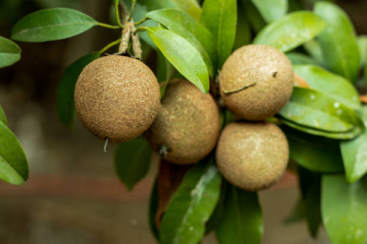
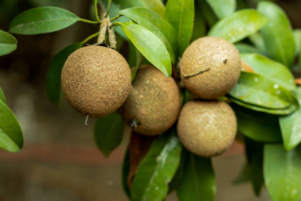
ENGLISH
1] Seed Selection:
Sapota seeds are extracted from ripe and healthy fruits, which are cut open to extract the seeds. The seeds should be cleaned and dried for a day or two before planting.
2] Germination:
The Sapota seeds are soaked in water for 24-48 hours to soften the hard outer shell. Once the seeds have swelled, they are planted in a pot filled with a mixture of soil and organic compost, and kept in a warm, sunny location.
3] Seedling Care:
Sapota seedlings require regular watering and fertilization to ensure healthy growth. They should be kept in a well-draining soil, and protected from strong winds and frost.
4] Transplanting:
Once the Sapota seedlings reach a height of 30-45 cm (12-18 inches), they can be transplanted to a larger pot or directly into the ground. Sapota trees prefer a warm, subtropical climate and well-drained soil with a pH between 6.0 and 7.5.
5] Pruning and Training:
As the Sapota tree grows, it should be pruned regularly to encourage a strong and open canopy, and to remove any diseased or damaged branches. Sapota trees can also be trained to a specific shape, such as a central leader or open vase, depending on the desired fruit production and tree size.
6] Flowering and Fruit Set:
Sapota trees typically begin to flower after 3-4 years of growth, depending on the variety and growing conditions. The flowers are pollinated by bees, and the fruit begins to develop shortly thereafter.
7] Harvesting and Storage:
Sapota should be harvested when they are fully ripened and have a slightly soft texture. They should be handled gently as they are easily bruised. They can be stored for a few days at room temperature or in the refrigerator, but are best eaten fresh.
Overall, growing Sapota requires patience, attention to detail, and a suitable climate and soil. With proper care, however, Sapota trees can provide abundant fruit for many years to come.
ENGLISH
తెలుగు
1] విత్తన ఎంపిక:
సపోటా గింజలు పండిన మరియు ఆరోగ్యకరమైన పండ్ల నుండి తీయబడతాయి, ఇవి విత్తనాలను తీయడానికి తెరిచి ఉంటాయి. విత్తనాలు నాటడానికి ముందు ఒకటి లేదా రెండు రోజులు శుభ్రం చేసి ఎండబెట్టాలి.
2] అంకురోత్పత్తి:
సపోటా గింజలను 24-48 గంటల పాటు నీటిలో నానబెట్టి గట్టి బయటి కవచం మృదువుగా ఉంటుంది. విత్తనాలు ఉబ్బిన తర్వాత, వాటిని మట్టి మరియు సేంద్రీయ కంపోస్ట్ మిశ్రమంతో నింపిన ఒక కుండలో పండిస్తారు మరియు వెచ్చని, ఎండ ప్రదేశంలో ఉంచుతారు.
3] మొలకల సంరక్షణ:
సపోటా మొలకల ఆరోగ్యవంతమైన పెరుగుదలను నిర్ధారించడానికి క్రమం తప్పకుండా నీరు త్రాగుట మరియు ఫలదీకరణం అవసరం. వాటిని బాగా ఎండిపోయే మట్టిలో ఉంచాలి మరియు బలమైన గాలులు మరియు మంచు నుండి రక్షించబడాలి.
4] మార్పిడి:
సపోటా మొలకలు 30-45 సెం.మీ (12-18 అంగుళాలు) ఎత్తుకు చేరుకున్న తర్వాత, వాటిని పెద్ద కుండలో లేదా నేరుగా భూమిలోకి నాటవచ్చు. సపోటా చెట్లు 6.0 మరియు 7.5 మధ్య pHతో వెచ్చని, ఉపఉష్ణమండల వాతావరణం మరియు బాగా ఎండిపోయిన నేలను ఇష్టపడతాయి.
5] కత్తిరింపు మరియు శిక్షణ:
సపోటా చెట్టు పెరిగేకొద్దీ, బలమైన మరియు బహిరంగ పందిరిని ప్రోత్సహించడానికి మరియు ఏదైనా వ్యాధిగ్రస్తులు లేదా దెబ్బతిన్న కొమ్మలను తొలగించడానికి దానిని క్రమం తప్పకుండా కత్తిరించాలి. సపోటా చెట్లకు కావలసిన పండ్ల ఉత్పత్తి మరియు చెట్ల పరిమాణాన్ని బట్టి సెంట్రల్ లీడర్ లేదా ఓపెన్ వాజ్ వంటి నిర్దిష్ట ఆకృతికి కూడా శిక్షణ ఇవ్వవచ్చు.
6] పుష్పించే మరియు పండ్ల సెట్:
సపోటా చెట్లు సాధారణంగా 3-4 సంవత్సరాల పెరుగుదల తర్వాత వివిధ మరియు పెరుగుతున్న పరిస్థితులపై ఆధారపడి పుష్పించడం ప్రారంభిస్తాయి. పువ్వులు తేనెటీగలు ద్వారా పరాగసంపర్కం చేయబడతాయి మరియు కొంతకాలం తర్వాత పండు అభివృద్ధి చెందడం ప్రారంభమవుతుంది.
7 హార్వెస్టింగ్ మరియు నిల్వ:
సపోటా పూర్తిగా పండిన తర్వాత మరియు కొద్దిగా మృదువైన ఆకృతిని కలిగి ఉన్నప్పుడు కోయాలి. అవి సులభంగా గాయపడినందున వాటిని సున్నితంగా నిర్వహించాలి. వాటిని గది ఉష్ణోగ్రత వద్ద లేదా రిఫ్రిజిరేటర్లో కొన్ని రోజులు నిల్వ చేయవచ్చు, అయితే వాటిని తాజాగా తింటే మంచిది.
మొత్తంమీద, సపోటా పెరగడానికి సహనం, వివరాలకు శ్రద్ధ మరియు అనుకూలమైన వాతావరణం మరియు నేల అవసరం. అయితే సరైన సంరక్షణతో సపోటా చెట్లు చాలా సంవత్సరాల వరకు సమృద్ధిగా ఫలాలను అందిస్తాయి.
తెలుగు
వినండి
15. LIMEFRUIT / 15.నిమ్మ పండు


ENGLISH
1] Seed Selection:
Lemon seeds are extracted from ripe and healthy fruits, which are cut open to extract the seeds. The seeds should be cleaned and dried for a day or two before planting.
2] Germination:
The lemon seeds are soaked in water for 24-48 hours to soften the hard outer shell. Once the seeds have swelled, they are planted in a pot filled with a mixture of soil and organic compost, and kept in a warm, sunny location.
3] Seedling Care:
Lemon seedlings require regular watering and fertilization to ensure healthy growth. They should be kept in a well-draining soil, and protected from strong winds and frost.
4] Transplanting:
Once the lemon seedlings reach a height of 30-45 cm (12-18 inches), they can be transplanted to a larger pot or directly into the ground. Lemon trees prefer a warm, subtropical climate and well-drained soil with a pH between 5.5 and 6.5.
5] Pruning and Training:
As the lemon tree grows, it should be pruned regularly to encourage a strong and open canopy, and to remove any diseased or damaged branches. Lemon trees can also be trained to a specific shape, such as a central leader or open vase, depending on the desired fruit production and tree size.
6] Flowering and Fruit Set:
Lemon trees typically begin to flower after 2-3 years of growth, depending on the variety and growing conditions. The flowers are pollinated by bees, and the fruit begins to develop shortly thereafter.
7] Harvesting and Storage:
Lemons should be harvested when they are fully colored and have a thin, smooth skin. They can be stored for a few days at room temperature or in the refrigerator, but are best eaten fresh.
Overall, growing lemons requires patience, attention to detail, and a suitable climate and soil. With proper care, however, lemon trees can provide abundant fruit for many years to come.
ENGLISH
తెలుగు
1] విత్తన ఎంపిక:
నిమ్మకాయ గింజలు పండిన మరియు ఆరోగ్యకరమైన పండ్ల నుండి తీయబడతాయి, అవి విత్తనాలను తీయడానికి తెరిచి ఉంటాయి. విత్తనాలు నాటడానికి ముందు ఒకటి లేదా రెండు రోజులు శుభ్రం చేసి ఎండబెట్టాలి.
2] అంకురోత్పత్తి:
గట్టి బయటి కవచాన్ని మృదువుగా చేయడానికి నిమ్మకాయ గింజలను 24-48 గంటలు నీటిలో నానబెట్టాలి. విత్తనాలు ఉబ్బిన తర్వాత, వాటిని మట్టి మరియు సేంద్రీయ కంపోస్ట్ మిశ్రమంతో నింపిన ఒక కుండలో పండిస్తారు మరియు వెచ్చని, ఎండ ప్రదేశంలో ఉంచుతారు.
3] మొలకల సంరక్షణ:
నిమ్మకాయ మొలకల ఆరోగ్యకరమైన పెరుగుదలను నిర్ధారించడానికి క్రమం తప్పకుండా నీరు త్రాగుట మరియు ఫలదీకరణం అవసరం. వాటిని బాగా ఎండిపోయే మట్టిలో ఉంచాలి మరియు బలమైన గాలులు మరియు మంచు నుండి రక్షించబడాలి.
4] మార్పిడి:
నిమ్మ మొలకలు 30-45 సెం.మీ (12-18 అంగుళాలు) ఎత్తుకు చేరుకున్న తర్వాత, వాటిని పెద్ద కుండలో లేదా నేరుగా భూమిలోకి నాటవచ్చు. నిమ్మ చెట్లు 5.5 మరియు 6.5 మధ్య pHతో వెచ్చని, ఉపఉష్ణమండల వాతావరణం మరియు బాగా ఎండిపోయిన నేలను ఇష్టపడతాయి.
5] కత్తిరింపు మరియు శిక్షణ:
నిమ్మ చెట్టు పెరిగేకొద్దీ, బలమైన మరియు బహిరంగ పందిరిని ప్రోత్సహించడానికి మరియు ఏదైనా వ్యాధి లేదా దెబ్బతిన్న కొమ్మలను తొలగించడానికి క్రమం తప్పకుండా కత్తిరించబడాలి. నిమ్మ చెట్లకు కావలసిన పండ్ల ఉత్పత్తి మరియు చెట్ల పరిమాణాన్ని బట్టి సెంట్రల్ లీడర్ లేదా ఓపెన్ వాసే వంటి నిర్దిష్ట ఆకృతికి కూడా శిక్షణ ఇవ్వవచ్చు.
6] పుష్పించే మరియు పండ్ల సెట్:
నిమ్మ చెట్లు సాధారణంగా వివిధ మరియు పెరుగుతున్న పరిస్థితులను బట్టి 2-3 సంవత్సరాల పెరుగుదల తర్వాత పుష్పించడం ప్రారంభిస్తాయి. పువ్వులు తేనెటీగలు ద్వారా పరాగసంపర్కం చేయబడతాయి మరియు కొంతకాలం తర్వాత పండు అభివృద్ధి చెందడం ప్రారంభమవుతుంది.
7] హార్వెస్టింగ్ మరియు నిల్వ:
నిమ్మకాయలు పూర్తిగా రంగులో ఉన్నప్పుడు మరియు సన్నని, మృదువైన చర్మం కలిగి ఉన్నప్పుడు కోయాలి. వాటిని గది ఉష్ణోగ్రత వద్ద లేదా రిఫ్రిజిరేటర్లో కొన్ని రోజులు నిల్వ చేయవచ్చు, అయితే వాటిని తాజాగా తింటే మంచిది.
మొత్తంమీద, నిమ్మకాయలు పెరగడానికి సహనం, వివరాలకు శ్రద్ధ మరియు తగిన వాతావరణం మరియు నేల అవసరం. అయితే, సరైన సంరక్షణతో, నిమ్మ చెట్లు అనేక సంవత్సరాలపాటు సమృద్ధిగా ఫలాలను అందిస్తాయి.
తెలుగు
వినండి
16. ORANGE / 16.నారింజ

 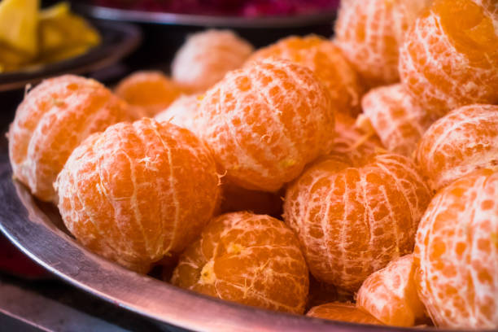
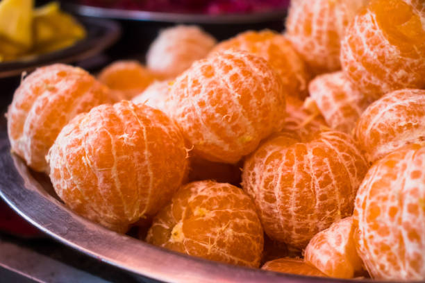
ENGLISH
1] Seed Selection:
Orange seeds are extracted from ripe and healthy fruits, which are cut open to extract the seeds. The seeds should be cleaned and dried for a day or two before planting.
2] Germination:
The orange seeds are soaked in water for 24-48 hours to soften the hard outer shell. Once the seeds have swelled, they are planted in a pot filled with a mixture of soil and organic compost, and kept in a warm, sunny location.
3] Seedling Care:
Orange seedlings require regular watering and fertilization to ensure healthy growth. They should be kept in a well-draining soil, and protected from strong winds and frost.
4] Transplanting:
Once the orange seedlings reach a height of 30-45 cm (12-18 inches), they can be transplanted to a larger pot or directly into the ground. Orange trees prefer a warm, subtropical climate and well-drained soil with a pH between 5.5 and 7.5.
5] Pruning and Training:
As the orange tree grows, it should be pruned regularly to encourage a strong and open canopy, and to remove any diseased or damaged branches. Orange trees can also be trained to a specific shape, such as a central leader or open vase, depending on the desired fruit production and tree size.
6] Flowering and Fruit Set:
Orange trees typically begin to flower after 2-3 years of growth, depending on the variety and growing conditions. The flowers are pollinated by bees, and the fruit begins to develop shortly thereafter.
7] Harvesting and Storage:
Oranges should be harvested when they are fully colored and have a thin, smooth skin. They can be stored for a few days at room temperature or in the refrigerator, but are best eaten fresh.
Overall, growing oranges requires patience, attention to detail, and a suitable climate and soil. With proper care, however, orange trees can provide abundant fruit for many years to come.
ENGLISH
తెలుగు
1] విత్తన ఎంపిక:
నారింజ గింజలు పండిన మరియు ఆరోగ్యకరమైన పండ్ల నుండి తీయబడతాయి, అవి విత్తనాలను తీయడానికి తెరిచి ఉంటాయి. విత్తనాలు నాటడానికి ముందు ఒకటి లేదా రెండు రోజులు శుభ్రం చేసి ఎండబెట్టాలి.
2] అంకురోత్పత్తి:
నారింజ గింజలను 24-48 గంటల పాటు నీటిలో నానబెట్టి గట్టి బయటి కవచం మృదువుగా ఉంటుంది. విత్తనాలు ఉబ్బిన తర్వాత, వాటిని మట్టి మరియు సేంద్రీయ కంపోస్ట్ మిశ్రమంతో నింపిన ఒక కుండలో పండిస్తారు మరియు వెచ్చని, ఎండ ప్రదేశంలో ఉంచుతారు.
3] మొలకల సంరక్షణ:
ఆరెంజ్ మొలకల ఆరోగ్యకరమైన పెరుగుదలను నిర్ధారించడానికి క్రమం తప్పకుండా నీరు త్రాగుట మరియు ఫలదీకరణం అవసరం. వాటిని బాగా ఎండిపోయే మట్టిలో ఉంచాలి మరియు బలమైన గాలులు మరియు మంచు నుండి రక్షించబడాలి.
4] మార్పిడి:
నారింజ మొలకలు 30-45 సెం.మీ (12-18 అంగుళాలు) ఎత్తుకు చేరుకున్న తర్వాత, వాటిని పెద్ద కుండలో లేదా నేరుగా భూమిలోకి నాటవచ్చు. నారింజ చెట్లు 5.5 మరియు 7.5 మధ్య pHతో వెచ్చని, ఉపఉష్ణమండల వాతావరణం మరియు బాగా ఎండిపోయిన నేలను ఇష్టపడతాయి.
5] కత్తిరింపు మరియు శిక్షణ:
నారింజ చెట్టు పెరిగేకొద్దీ, బలమైన మరియు బహిరంగ పందిరిని ప్రోత్సహించడానికి మరియు ఏదైనా వ్యాధి లేదా దెబ్బతిన్న కొమ్మలను తొలగించడానికి క్రమం తప్పకుండా కత్తిరించబడాలి. ఆరెంజ్ చెట్లకు కావలసిన పండ్ల ఉత్పత్తి మరియు చెట్ల పరిమాణాన్ని బట్టి సెంట్రల్ లీడర్ లేదా ఓపెన్ వాసే వంటి నిర్దిష్ట ఆకృతికి కూడా శిక్షణ ఇవ్వవచ్చు.
6] పుష్పించే మరియు పండ్ల సెట్:
నారింజ చెట్లు సాధారణంగా వివిధ మరియు పెరుగుతున్న పరిస్థితులను బట్టి 2-3 సంవత్సరాల పెరుగుదల తర్వాత పుష్పించడం ప్రారంభిస్తాయి. పువ్వులు తేనెటీగలు ద్వారా పరాగసంపర్కం చేయబడతాయి మరియు కొంతకాలం తర్వాత పండు అభివృద్ధి చెందడం ప్రారంభమవుతుంది.
7] హార్వెస్టింగ్ మరియు నిల్వ:
నారింజ పూర్తిగా రంగులో ఉన్నప్పుడు మరియు సన్నని, మృదువైన చర్మం కలిగి ఉన్నప్పుడు వాటిని పండించాలి. వాటిని గది ఉష్ణోగ్రత వద్ద లేదా రిఫ్రిజిరేటర్లో కొన్ని రోజులు నిల్వ చేయవచ్చు, అయితే వాటిని తాజాగా తింటే మంచిది.
మొత్తంమీద, నారింజ పండించడానికి సహనం, వివరాలకు శ్రద్ధ మరియు తగిన వాతావరణం మరియు నేల అవసరం. అయితే, సరైన జాగ్రత్తతో, నారింజ చెట్లు చాలా సంవత్సరాల పాటు సమృద్ధిగా ఫలాలను అందిస్తాయి.
తెలుగు
వినండి
17. SWEET LIME/MOSAMBI / 17. బత్తాయి/మోసాంబి


ENGLISH
1] Seed Selection:
Sweet lime seeds are extracted from ripe and healthy fruits, which are cut open to extract the seeds. The seeds should be cleaned and dried for a day or two before planting.
2] Germination:
The sweet lime seeds are soaked in water for 24-48 hours to soften the hard outer shell. Once the seeds have swelled, they are planted in a pot filled with a mixture of soil and organic compost, and kept in a warm, sunny location.
3] Seedling Care:
Sweet lime seedlings require regular watering and fertilization to ensure healthy growth. They should be kept in a well-draining soil, and protected from strong winds and frost.
4] Transplanting:
Once the sweet lime seedlings reach a height of 30-45 cm (12-18 inches), they can be transplanted to a larger pot or directly into the ground. Sweet lime trees prefer a warm, subtropical climate and well-drained soil with a pH between 5.5 and 7.0.
5] Pruning and Training:
As the sweet lime tree grows, it should be pruned regularly to encourage a strong and open canopy, and to remove any diseased or damaged branches. Sweet lime trees can also be trained to a specific shape, such as a central leader or open vase, depending on the desired fruit production and tree size.
6] Flowering and Fruit Set:
Sweet lime trees typically begin to flower after 2-3 years of growth, depending on the variety and growing conditions. The flowers are pollinated by insects, and the fruit begins to develop shortly thereafter.
7] Harvesting and Storage:
Sweet lime fruits should be harvested when they are fully colored and have a thin, smooth skin. They can be stored for a few days at room temperature or in the refrigerator, but are best eaten fresh.
Overall, growing sweet limes requires patience, attention to detail, and a suitable climate and soil. With proper care, however, sweet lime trees can provide abundant fruit for many years to come.
ENGLISH
తెలుగు
1] విత్తన ఎంపిక:
బత్తాయి గింజలు పండిన మరియు ఆరోగ్యకరమైన పండ్ల నుండి సంగ్రహించబడతాయి, ఇవి విత్తనాలను తీయడానికి తెరిచి ఉంచబడతాయి. విత్తనాలు నాటడానికి ముందు ఒకటి లేదా రెండు రోజులు శుభ్రం చేసి ఎండబెట్టాలి.
2] అంకురోత్పత్తి:
గట్టి బయటి కవచాన్ని మృదువుగా చేయడానికి తీపి బత్తాయిను 24-48 గంటలు నీటిలో నానబెట్టాలి. విత్తనాలు ఉబ్బిన తర్వాత, వాటిని మట్టి మరియు సేంద్రీయ కంపోస్ట్ మిశ్రమంతో నింపిన ఒక కుండలో పండిస్తారు మరియు వెచ్చని, ఎండ ప్రదేశంలో ఉంచుతారు.
3] మొలకల సంరక్షణ:
బత్తాయి మొలకలకి ఆరోగ్యకరమైన పెరుగుదలను నిర్ధారించడానికి క్రమం తప్పకుండా నీరు త్రాగుట మరియు ఫలదీకరణం అవసరం. వాటిని బాగా ఎండిపోయే మట్టిలో ఉంచాలి మరియు బలమైన గాలులు మరియు మంచు నుండి రక్షించబడాలి.
4] మార్పిడి:
బత్తాయి మొలకలు 30-45 సెం.మీ (12-18 అంగుళాలు) ఎత్తుకు చేరుకున్న తర్వాత, వాటిని పెద్ద కుండలో లేదా నేరుగా భూమిలోకి నాటవచ్చు. బత్తాయి చెట్లు 5.5 మరియు 7.0 మధ్య pH తో వెచ్చని, ఉపఉష్ణమండల వాతావరణం మరియు బాగా ఎండిపోయిన నేలను ఇష్టపడతాయి.
5] కత్తిరింపు మరియు శిక్షణ:
బత్తాయి చెట్టు పెరిగేకొద్దీ, బలమైన మరియు బహిరంగ పందిరిని ప్రోత్సహించడానికి మరియు ఏదైనా వ్యాధి లేదా దెబ్బతిన్న కొమ్మలను తొలగించడానికి క్రమం తప్పకుండా కత్తిరించబడాలి. బత్తాయి చెట్లకు కావలసిన పండ్ల ఉత్పత్తి మరియు చెట్ల పరిమాణాన్ని బట్టి సెంట్రల్ లీడర్ లేదా ఓపెన్ వాసే వంటి నిర్దిష్ట ఆకృతికి కూడా శిక్షణ ఇవ్వవచ్చు.
6] పుష్పించే మరియు పండ్ల సెట్:
బత్తాయి చెట్లు సాధారణంగా వివిధ మరియు పెరుగుతున్న పరిస్థితులపై ఆధారపడి, 2-3 సంవత్సరాల పెరుగుదల తర్వాత పుష్పించడం ప్రారంభిస్తాయి. పువ్వులు కీటకాలచే పరాగసంపర్కం చేయబడతాయి మరియు కొంతకాలం తర్వాత పండు అభివృద్ధి చెందడం ప్రారంభమవుతుంది.
7] హార్వెస్టింగ్ మరియు నిల్వ:
తీపి సున్నం పండ్లు పూర్తిగా రంగు మరియు సన్నని, మృదువైన చర్మం కలిగి ఉన్నప్పుడు పండించాలి. వాటిని గది ఉష్ణోగ్రత వద్ద లేదా రిఫ్రిజిరేటర్లో కొన్ని రోజులు నిల్వ చేయవచ్చు, అయితే వాటిని తాజాగా తింటే మంచిది.
మొత్తంమీద, బత్తాయిలు పెరగడానికి సహనం, వివరాలకు శ్రద్ధ మరియు తగిన వాతావరణం మరియు నేల అవసరం. అయితే, సరైన సంరక్షణతో, బత్తాయి చెట్లు చాలా సంవత్సరాల పాటు సమృద్ధిగా ఫలాలను అందిస్తాయి.
తెలుగు
వినండి
18. POMEGRANATE / 18.దానిమ్మ


ENGLISH
1] Seed Selection:
Pomegranate seeds are extracted from ripe and healthy fruits, which are cut open to extract the seeds. The seeds should be cleaned and dried for a day or two before planting.
2] Germination:
The pomegranate seeds are soaked in water for 24-48 hours to soften the hard outer shell. Once the seeds have swelled, they are planted in a pot filled with a mixture of soil and organic compost, and kept in a warm, sunny location.
3] Seedling Care:
Pomegranate seedlings require regular watering and fertilization to ensure healthy growth. They should be kept in a well-draining soil, and protected from strong winds and frost.
4] Transplanting:
Once the pomegranate seedlings reach a height of 30-45 cm (12-18 inches), they can be transplanted to a larger pot or directly into the ground. Pomegranate trees prefer a warm, arid climate and well-drained soil with a pH between 5.5 and 7.0.
5] Pruning and Training:
As the pomegranate tree grows, it should be pruned regularly to encourage a strong and open canopy, and to remove any diseased or damaged branches. Pomegranate trees can also be trained to a specific shape, such as a central leader or open vase, depending on the desired fruit production and tree size.
6] Flowering and Fruit Set:
Pomegranate trees typically begin to flower after 2-3 years of growth, depending on the variety and growing conditions. The flowers are pollinated by insects, and the fruit begins to develop shortly thereafter.
7] Harvesting and Storage:
Pomegranate fruits should be harvested when they are fully colored and have a firm skin. They can be stored for a few weeks at room temperature or in the refrigerator, but are best eaten fresh.
Overall, growing pomegranates requires patience, attention to detail, and a suitable climate and soil. With proper care, however, pomegranate trees can provide abundant fruit for many years to come.
ENGLISH
తెలుగు
1] విత్తన ఎంపిక:
దానిమ్మ గింజలు పండిన మరియు ఆరోగ్యకరమైన పండ్ల నుండి తీయబడతాయి, అవి విత్తనాలను తీయడానికి తెరిచి ఉంచబడతాయి. విత్తనాలు నాటడానికి ముందు ఒకటి లేదా రెండు రోజులు శుభ్రం చేసి ఎండబెట్టాలి.
2] అంకురోత్పత్తి:
దానిమ్మ గింజలను 24-48 గంటల పాటు నీటిలో నానబెట్టి గట్టి బయటి కవచం మృదువుగా ఉంటుంది. విత్తనాలు ఉబ్బిన తర్వాత, వాటిని మట్టి మరియు సేంద్రీయ కంపోస్ట్ మిశ్రమంతో నింపిన ఒక కుండలో పండిస్తారు మరియు వెచ్చని, ఎండ ప్రదేశంలో ఉంచుతారు.
3] మొలకల సంరక్షణ:
దానిమ్మ మొలకల ఆరోగ్యకరమైన పెరుగుదలను నిర్ధారించడానికి క్రమం తప్పకుండా నీరు త్రాగుట మరియు ఫలదీకరణం అవసరం. వాటిని బాగా ఎండిపోయే మట్టిలో ఉంచాలి మరియు బలమైన గాలులు మరియు మంచు నుండి రక్షించబడాలి.
4] మార్పిడి:
దానిమ్మ మొలకలు 30-45 సెం.మీ (12-18 అంగుళాలు) ఎత్తుకు చేరుకున్న తర్వాత, వాటిని పెద్ద కుండలో లేదా నేరుగా భూమిలోకి నాటవచ్చు. దానిమ్మ చెట్లు 5.5 మరియు 7.0 మధ్య pHతో వెచ్చని, శుష్క వాతావరణం మరియు బాగా ఎండిపోయిన నేలను ఇష్టపడతాయి.
5] కత్తిరింపు మరియు శిక్షణ:
దానిమ్మ చెట్టు పెరిగేకొద్దీ, బలమైన మరియు బహిరంగ పందిరిని ప్రోత్సహించడానికి మరియు ఏదైనా వ్యాధిగ్రస్తులు లేదా దెబ్బతిన్న కొమ్మలను తొలగించడానికి దానిని క్రమం తప్పకుండా కత్తిరించాలి. దానిమ్మ చెట్లకు కావలసిన పండ్ల ఉత్పత్తి మరియు చెట్ల పరిమాణాన్ని బట్టి సెంట్రల్ లీడర్ లేదా ఓపెన్ వాసే వంటి నిర్దిష్ట ఆకృతికి కూడా శిక్షణ ఇవ్వవచ్చు.
6] పుష్పించే మరియు పండ్ల సెట్:
దానిమ్మ చెట్లు సాధారణంగా వివిధ మరియు పెరుగుతున్న పరిస్థితులపై ఆధారపడి 2-3 సంవత్సరాల పెరుగుదల తర్వాత పుష్పించడం ప్రారంభిస్తాయి. పువ్వులు కీటకాలచే పరాగసంపర్కం చేయబడతాయి మరియు కొంతకాలం తర్వాత పండు అభివృద్ధి చెందడం ప్రారంభమవుతుంది.
7] హార్వెస్టింగ్ మరియు నిల్వ:
దానిమ్మ పండ్లు పూర్తిగా రంగులో మరియు దృఢమైన చర్మం కలిగి ఉన్నప్పుడు వాటిని పండించాలి. వాటిని గది ఉష్ణోగ్రత వద్ద లేదా రిఫ్రిజిరేటర్లో కొన్ని వారాల పాటు నిల్వ చేయవచ్చు, అయితే వాటిని తాజాగా తింటే మంచిది.
మొత్తంమీద, దానిమ్మపండ్లను పెంచడానికి సహనం, వివరాలకు శ్రద్ధ మరియు తగిన వాతావరణం మరియు నేల అవసరం. అయితే, సరైన సంరక్షణతో, దానిమ్మ చెట్లు అనేక సంవత్సరాలపాటు సమృద్ధిగా ఫలాలను అందిస్తాయి.
తెలుగు
వినండి
19. GUAVA / 19.జామపండు


ENGLISH
1] Seed Selection:
Guava seeds are collected from ripe and healthy fruits, which are cut open to extract the seeds. The seeds should be cleaned and dried for a day or two before planting.
2] Germination:
The guava seeds are soaked in water for 24-48 hours to soften the hard outer shell. Once the seeds have swelled, they are planted in a pot filled with a mixture of soil and organic compost, and kept in a warm, sunny location.
3] Seedling Care:
Guava seedlings require regular watering and fertilization to ensure healthy growth. They should be kept in a well-draining soil, and protected from strong winds and frost.
4] Transplanting:
Once the guava seedlings reach a height of 30-45 cm (12-18 inches), they can be transplanted to a larger pot or directly into the ground. Guava trees prefer a warm, humid climate and well-drained soil with a pH between 5.5 and 7.0.
5] Pruning and Training:
As the guava tree grows, it should be pruned regularly to encourage a strong and open canopy, and to remove any diseased or damaged branches. Guava trees can also be trained to a specific shape, such as a central leader or open vase, depending on the desired fruit production and tree size.
6] Flowering and Fruit Set:
Guava trees typically begin to flower after 2-4 years of growth, depending on the variety and growing conditions. The flowers are pollinated by insects or by hand, and the fruit begins to develop shortly thereafter.
7] Harvesting and Storage:
Guava fruits should be harvested when they are fully colored and slightly soft to the touch. They can be stored for a few days at room temperature or in the refrigerator, but are best eaten fresh.
Overall, growing guavas requires patience, attention to detail, and a suitable climate and soil. With proper care, however, guava trees can provide abundant fruit for many years to come.
ENGLISH
తెలుగు
1] విత్తన ఎంపిక:
జామ గింజలను పండిన మరియు ఆరోగ్యకరమైన పండ్ల నుండి సేకరిస్తారు, వీటిని విత్తనాలను తీయడానికి తెరిచి ఉంచుతారు. విత్తనాలు నాటడానికి ముందు ఒకటి లేదా రెండు రోజులు శుభ్రం చేసి ఎండబెట్టాలి.
2] అంకురోత్పత్తి:
జామ గింజలను 24-48 గంటల పాటు నీటిలో నానబెట్టి గట్టి బయటి కవచం మృదువుగా ఉంటుంది. విత్తనాలు ఉబ్బిన తర్వాత, వాటిని మట్టి మరియు సేంద్రీయ కంపోస్ట్ మిశ్రమంతో నింపిన ఒక కుండలో పండిస్తారు మరియు వెచ్చని, ఎండ ప్రదేశంలో ఉంచుతారు.
3] మొలకల సంరక్షణ:
జామ మొలకల ఆరోగ్యకరమైన పెరుగుదలను నిర్ధారించడానికి క్రమం తప్పకుండా నీరు త్రాగుట మరియు ఫలదీకరణం అవసరం. వాటిని బాగా ఎండిపోయే మట్టిలో ఉంచాలి మరియు బలమైన గాలులు మరియు మంచు నుండి రక్షించబడాలి.
4] మార్పిడి:
జామ మొక్కలు 30-45 సెం.మీ (12-18 అంగుళాలు) ఎత్తుకు చేరుకున్న తర్వాత, వాటిని పెద్ద కుండలో లేదా నేరుగా భూమిలోకి నాటవచ్చు. జామ చెట్లు 5.5 మరియు 7.0 మధ్య pHతో వెచ్చని, తేమతో కూడిన వాతావరణం మరియు బాగా ఎండిపోయిన నేలను ఇష్టపడతాయి.
5] కత్తిరింపు మరియు శిక్షణ:
జామ చెట్టు పెరిగేకొద్దీ, బలమైన మరియు బహిరంగ పందిరిని ప్రోత్సహించడానికి మరియు ఏదైనా వ్యాధిగ్రస్తులు లేదా దెబ్బతిన్న కొమ్మలను తొలగించడానికి దానిని క్రమం తప్పకుండా కత్తిరించాలి. జామ చెట్లకు కావలసిన పండ్ల ఉత్పత్తి మరియు చెట్ల పరిమాణాన్ని బట్టి సెంట్రల్ లీడర్ లేదా ఓపెన్ వాసే వంటి నిర్దిష్ట ఆకృతికి కూడా శిక్షణ ఇవ్వవచ్చు.
6] పుష్పించే మరియు పండ్ల సెట్:
జామ చెట్లు సాధారణంగా వివిధ మరియు పెరుగుతున్న పరిస్థితులను బట్టి 2-4 సంవత్సరాల పెరుగుదల తర్వాత పుష్పించడం ప్రారంభిస్తాయి. పువ్వులు కీటకాల ద్వారా లేదా చేతితో పరాగసంపర్కం చేయబడతాయి మరియు కొంతకాలం తర్వాత పండు అభివృద్ధి చెందడం ప్రారంభమవుతుంది.
7] హార్వెస్టింగ్ మరియు నిల్వ:
జామ పండ్లు పూర్తిగా రంగులో మరియు స్పర్శకు కొద్దిగా మెత్తగా ఉన్నప్పుడు కోయాలి. వాటిని గది ఉష్ణోగ్రత వద్ద లేదా రిఫ్రిజిరేటర్లో కొన్ని రోజులు నిల్వ చేయవచ్చు, అయితే వాటిని తాజాగా తింటే మంచిది.
మొత్తంమీద, జామపండ్లు పెరగడానికి సహనం, వివరాలకు శ్రద్ధ మరియు తగిన వాతావరణం మరియు నేల అవసరం. అయితే, సరైన సంరక్షణతో, జామ చెట్లు చాలా సంవత్సరాల పాటు సమృద్ధిగా ఫలాలను అందిస్తాయి.
తెలుగు
వినండి
20. MANGO / 20.మామిడి పండు

ENGLISH
1] Seed Selection:
Mango seeds are collected from mature and healthy fruits, which are thoroughly cleaned and allowed to dry for a day or two.
2] Germination:
The mango seeds are soaked in water for 24-48 hours to soften the hard outer shell. Once the seeds have swelled, they are planted in a pot filled with a mixture of soil and organic compost, and kept in a warm, sunny location.
3] Seedling Care:
Mango seedlings require regular watering and fertilization to ensure healthy growth. They should be kept in a well-draining soil, and protected from strong winds and frost.
4] Transplanting:
Once the mango seedlings reach a height of 30-45 cm (12-18 inches), they can be transplanted to a larger pot or directly into the ground. Mango trees prefer a warm, humid climate and well-drained soil with a pH between 6.0 and 7.5.
5] Pruning and Training:
As the mango tree grows, it should be pruned regularly to encourage a strong and open canopy, and to remove any diseased or damaged branches. Mango trees can also be trained to a specific shape, such as a central leader or open vase, depending on the desired fruit production and tree size.
6] Flowering and Fruit Set:
Mango trees typically begin to flower after 3-5 years of growth, depending on the variety and growing conditions. The flowers are pollinated by insects or by hand, and the fruit begins to develop shortly thereafter.
7] Harvesting and Storage:
Mango fruits should be harvested when they are mature and fully colored, but still firm. They can be stored for a few days at room temperature or in the refrigerator, but are best eaten fresh.
Overall, growing mangoes requires patience, attention to detail, and a suitable climate and soil. With proper care, however, mango trees can provide abundant fruit for many years to come.
ENGLISH
తెలుగు
1] విత్తన ఎంపిక:
మామిడి గింజలు పరిపక్వ మరియు ఆరోగ్యకరమైన పండ్ల నుండి సేకరిస్తారు, వీటిని పూర్తిగా శుభ్రం చేసి ఒకటి లేదా రెండు రోజులు పొడిగా ఉంచుతారు.
2] అంకురోత్పత్తి:
మామిడి గింజలను 24-48 గంటల పాటు నీటిలో నానబెట్టి గట్టి బయటి కవచం మృదువుగా ఉంటుంది. విత్తనాలు ఉబ్బిన తర్వాత, వాటిని మట్టి మరియు సేంద్రీయ కంపోస్ట్ మిశ్రమంతో నింపిన ఒక కుండలో పండిస్తారు మరియు వెచ్చని, ఎండ ప్రదేశంలో ఉంచుతారు.
3] విత్తనాల సంరక్షణ:
మామిడి మొలకల ఆరోగ్యవంతమైన పెరుగుదలను నిర్ధారించడానికి క్రమం తప్పకుండా నీరు త్రాగుట మరియు ఫలదీకరణం అవసరం. వాటిని బాగా ఎండిపోయే మట్టిలో ఉంచాలి మరియు బలమైన గాలులు మరియు మంచు నుండి రక్షించబడాలి
4] మార్పిడి:
మామిడి మొలకలు 30-45 సెం.మీ (12-18 అంగుళాలు) ఎత్తుకు చేరుకున్న తర్వాత, వాటిని పెద్ద కుండలో లేదా నేరుగా భూమిలోకి నాటవచ్చు. మామిడి చెట్లు 6.0 మరియు 7.5 మధ్య pHతో వెచ్చని, తేమతో కూడిన వాతావరణం మరియు బాగా ఎండిపోయిన నేలను ఇష్టపడతాయి.
5] కత్తిరింపు మరియు శిక్షణ:
మామిడి చెట్టు పెరిగేకొద్దీ, బలమైన మరియు బహిరంగ పందిరిని ప్రోత్సహించడానికి మరియు ఏదైనా వ్యాధి లేదా దెబ్బతిన్న కొమ్మలను తొలగించడానికి క్రమం తప్పకుండా కత్తిరించబడాలి. మామిడి చెట్లకు కావలసిన పండ్ల ఉత్పత్తి మరియు చెట్ల పరిమాణాన్ని బట్టి సెంట్రల్ లీడర్ లేదా ఓపెన్ వాజ్ వంటి నిర్దిష్ట ఆకృతికి కూడా శిక్షణ ఇవ్వవచ్చు.
6] పుష్పించే మరియు పండ్ల సెట్:
మామిడి చెట్లు సాధారణంగా వివిధ మరియు పెరుగుతున్న పరిస్థితులపై ఆధారపడి, 3-5 సంవత్సరాల పెరుగుదల తర్వాత పుష్పించడం ప్రారంభిస్తాయి. పువ్వులు కీటకాల ద్వారా లేదా చేతితో పరాగసంపర్కం చేయబడతాయి మరియు కొంతకాలం తర్వాత పండు అభివృద్ధి చెందడం ప్రారంభమవుతుంది.
7] హార్వెస్టింగ్ మరియు నిల్వ:
మామిడి పండ్లు పరిపక్వత మరియు పూర్తిగా రంగులో ఉన్నప్పుడు, కానీ ఇప్పటికీ గట్టిగా ఉన్నప్పుడు పండించాలి. వాటిని గది ఉష్ణోగ్రత వద్ద లేదా రిఫ్రిజిరేటర్లో కొన్ని రోజులు నిల్వ చేయవచ్చు, అయితే వాటిని తాజాగా తింటే మంచిది
మొత్తంమీద, మామిడిని పెంచడానికి సహనం, వివరాలకు శ్రద్ధ మరియు తగిన వాతావరణం మరియు నేల అవసరం. అయితే, సరైన సంరక్షణతో, మామిడి చెట్లు చాలా సంవత్సరాల వరకు సమృద్ధిగా ఫలాలను అందిస్తాయి.
తెలుగు
వినండి
21. APPLE / 21.ఆపిల్
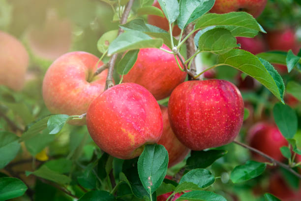
ENGLISH
1] Climate conditions:
Apples thrive in temperate climates with cool winters and mild summers. They require a chilling period during winter for proper flowering and fruiting.
2] Seed Selection:
Apple seeds are collected from mature and healthy fruits, which are thoroughly cleaned and allowed to dry for a day or two.
3] Planting:
Apple trees are usually planted during the winter months, preferably in November or December. Proper spacing between trees is essential for good growth and yield.
4] Seedling Care:
Apple seedlings require regular watering and fertilization to ensure healthy growth. They should be kept in a well-draining soil, and protected from strong winds and frost.
5] Transplanting:
Once the Apple seedlings reach a height of 30-45 cm (12-18 inches), they can be transplanted to a larger pot or directly into the ground. Apple trees prefer a warm, humid climate and well-drained soil with a pH between 6.0 and 7.5.
6] Pruning and Training:
As the Apple tree grows, it should be pruned regularly to encourage a strong and open canopy, and to remove any diseased or damaged branches. Apple trees can also be trained to a specific shape, such as a central leader or open vase, depending on the desired fruit production and tree size.
7] Flowering and Fruit Set:
Apple trees typically begin to flower after 3-5 years of growth, depending on the variety and growing conditions. The flowers are pollinated by insects or by hand, and the fruit begins to develop shortly thereafter.
8] Harvesting and Storage:
Apple fruits should be harvested when they are mature and fully colored, but still firm. They can be stored for a few days at room temperature or in the refrigerator, but are best eaten fresh.
Overall, growing Apple requires patience, attention to detail, and a suitable climate and soil. With proper care, however, Apple trees can provide abundant fruit for many years to come.
ENGLISH
తెలుగు
1] వాతావరణ పరిస్థితులు:
యాపిల్స్ చల్లని శీతాకాలాలు మరియు తేలికపాటి వేసవితో సమశీతోష్ణ వాతావరణంలో వృద్ధి చెందుతాయి. అవి సరైన పుష్పించే మరియు ఫలాలు కాయడానికి శీతాకాలంలో చల్లగా ఉండే కాలం అవసరం.
2] విత్తన ఎంపిక:
యాపిల్ గింజలు పరిపక్వమైన మరియు ఆరోగ్యకరమైన పండ్ల నుండి సేకరిస్తారు, వీటిని పూర్తిగా శుభ్రం చేసి ఒకటి లేదా రెండు రోజులు పొడిగా ఉంచడానికి అనుమతిస్తారు.
3] నాటడం:
ఆపిల్ చెట్లను సాధారణంగా శీతాకాలంలో, నవంబర్ లేదా డిసెంబర్లో నాటడం మంచిది. మంచి పెరుగుదల మరియు దిగుబడి కోసం చెట్ల మధ్య సరైన అంతరం అవసరం.
4] మొలకల సంరక్షణ:
యాపిల్ మొలకల ఆరోగ్యకరమైన పెరుగుదలను నిర్ధారించడానికి క్రమం తప్పకుండా నీరు త్రాగుట మరియు ఫలదీకరణం అవసరం. వాటిని బాగా ఎండిపోయే మట్టిలో ఉంచాలి మరియు బలమైన గాలులు మరియు మంచు నుండి రక్షించబడాలి.
5] మార్పిడి:
ఆపిల్ మొలకలు 30-45 సెం.మీ (12-18 అంగుళాలు) ఎత్తుకు చేరుకున్న తర్వాత, వాటిని పెద్ద కుండలో లేదా నేరుగా భూమిలోకి నాటవచ్చు. ఆపిల్ చెట్లు 6.0 మరియు 7.5 మధ్య pHతో వెచ్చని, తేమతో కూడిన వాతావరణం మరియు బాగా ఎండిపోయిన నేలను ఇష్టపడతాయి.
6] కత్తిరింపు మరియు శిక్షణ:
ఆపిల్ చెట్టు పెరిగేకొద్దీ, బలమైన మరియు బహిరంగ పందిరిని ప్రోత్సహించడానికి మరియు ఏదైనా వ్యాధిగ్రస్తులైన లేదా దెబ్బతిన్న కొమ్మలను తొలగించడానికి దానిని క్రమం తప్పకుండా కత్తిరించాలి. ఆపిల్ చెట్లకు కావలసిన పండ్ల ఉత్పత్తి మరియు చెట్ల పరిమాణాన్ని బట్టి సెంట్రల్ లీడర్ లేదా ఓపెన్ వాజ్ వంటి నిర్దిష్ట ఆకృతికి కూడా శిక్షణ ఇవ్వవచ్చు.
7] పుష్పించే మరియు పండ్ల సెట్:
ఆపిల్ చెట్లు సాధారణంగా 3-5 సంవత్సరాల పెరుగుదల తర్వాత వివిధ మరియు పెరుగుతున్న పరిస్థితులపై ఆధారపడి పుష్పించడం ప్రారంభిస్తాయి. పువ్వులు కీటకాల ద్వారా లేదా చేతితో పరాగసంపర్కం చేయబడతాయి మరియు ఆ తర్వాత కొంతకాలానికి పండు అభివృద్ధి చెందడం ప్రారంభమవుతుంది.
8] హార్వెస్టింగ్ మరియు నిల్వ:
యాపిల్ పండ్లను అవి పరిపక్వంగా మరియు పూర్తిగా రంగులో, కానీ ఇప్పటికీ గట్టిగా ఉన్నప్పుడు పండించాలి. వాటిని గది ఉష్ణోగ్రత వద్ద లేదా రిఫ్రిజిరేటర్లో కొన్ని రోజులు నిల్వ చేయవచ్చు, అయితే వాటిని తాజాగా తింటే మంచిది.
మొత్తంమీద, పెరుగుతున్న ఆపిల్కు సహనం, వివరాలకు శ్రద్ధ మరియు తగిన వాతావరణం మరియు నేల అవసరం. అయితే సరైన సంరక్షణతో, యాపిల్ చెట్లు చాలా సంవత్సరాల పాటు సమృద్ధిగా ఫలాలను అందిస్తాయి.
తెలుగు
వినండి
22. COCONUT / 22.కొబ్బరి కాయ
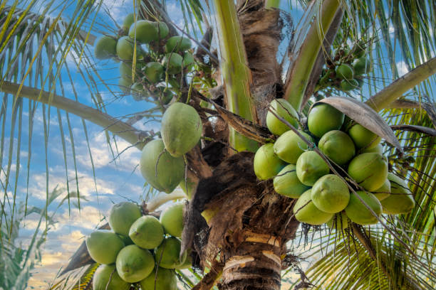

ENGLISH
1] Site Selection:
Choose a well-drained site with sandy or loamy soil.Ensure the site has good sunlight exposure and protection from strong winds.
2] Variety Selection:
Select suitable coconut varieties based on the purpose (e.g., tender coconut, copra, hybrid varieties).
3] Land Preparation:
Prepare pits or trenches for planting, usually about 2-3 feet deep and wide.
4] Planting::
Plant coconut seedlings or saplings during the monsoon season (June to August) for better establishment.Maintain spacing of 7-8 meters between each coconut plant.
5] Irrigation:
Provide regular and adequate irrigation, especially during the dry season.Drip irrigation or sprinkler systems can be used for efficient water management.
6] Pest and Disease Management:
Monitor coconut palms regularly for pests like rhinoceros beetle, red palm weevil, and diseases like leaf rot, stem bleeding, etc.Use biopesticides, cultural practices, and integrated pest management (IPM) strategies to control pests and diseases.
7] Harvesting and Storage:
Coconuts are typically ready for harvest in 12-14 months for tender coconuts and 5-6 years for mature coconuts.Store harvested coconuts in a cool, dry place and process them for various products like copra, coconut oil, coconut water, etc.
Overall, growing coconuts requires patience, attention to detail, and a suitable climate and soil. With proper care, however, coconut trees can provide abundant fruit for many years to come.
ENGLISH
తెలుగు
1] సైట్ ఎంపిక:
ఇసుక లేదా లోమీ మట్టితో బాగా ఎండిపోయిన సైట్ను ఎంచుకోండి. సైట్కు మంచి సూర్యరశ్మి మరియు బలమైన గాలుల నుండి రక్షణ ఉండేలా చూసుకోండి.
2] వెరైటీ ఎంపిక:
ప్రయోజనం ఆధారంగా తగిన కొబ్బరి రకాలను ఎంచుకోండి (ఉదా. లేత కొబ్బరి, కొప్రా, హైబ్రిడ్ రకాలు).
3] భూమిని సిద్ధం చేయడం:
సాధారణంగా 2-3 అడుగుల లోతు మరియు వెడల్పుతో మొక్కలు నాటడానికి గుంటలు లేదా కందకాలు సిద్ధం చేయండి.
4] నాటడం::
మంచి స్థాపన కోసం వర్షాకాలంలో (జూన్ నుండి ఆగస్టు వరకు) కొబ్బరి మొక్కలు లేదా మొక్కలను నాటండి. ప్రతి కొబ్బరి మొక్క మధ్య 7-8 మీటర్ల దూరం ఉండేలా చూసుకోండి.
5] నీటిపారుదల:
క్రమమైన మరియు తగినంత నీటిపారుదలని అందించండి, ముఖ్యంగా పొడి కాలంలో. సమర్థవంతమైన నీటి నిర్వహణ కోసం బిందు సేద్యం లేదా స్ప్రింక్లర్ వ్యవస్థలను ఉపయోగించవచ్చు.
6] తెగులు మరియు వ్యాధి నిర్వహణ:
ఖడ్గమృగం వంటి చీడపీడలు, ఎర్రటి తాటి పురుగులు మరియు ఆకు తెగులు, కాండం రక్తస్రావం మొదలైన వ్యాధుల కోసం కొబ్బరి చెట్లను క్రమం తప్పకుండా పర్యవేక్షించండి తెగుళ్లు మరియు వ్యాధులను నియంత్రించడానికి పెస్ట్ మేనేజ్మెంట్ (IPM) వ్యూహాలు.
7] హార్వెస్టింగ్ మరియు నిల్వ:
కొబ్బరికాయలు సాధారణంగా లేత కొబ్బరి కోసం 12-14 నెలల్లో మరియు పండిన కొబ్బరికాయలకు 5-6 సంవత్సరాలలో కోతకు సిద్ధంగా ఉంటాయి. పండించిన కొబ్బరికాయలను చల్లని, పొడి ప్రదేశంలో మరియు ప్రక్రియలో నిల్వ చేయండి. వాటిని కొప్రా, కొబ్బరి నూనె, కొబ్బరి నీరు మొదలైన వివిధ ఉత్పత్తుల కోసం.
మొత్తంమీద, కొబ్బరికాయలు పెరగడానికి సహనం, వివరాలకు శ్రద్ధ మరియు అనుకూలమైన వాతావరణం మరియు నేల అవసరం. అయితే, సరైన సంరక్షణతో, కొబ్బరి చెట్లు అనేక సంవత్సరాలపాటు సమృద్ధిగా ఫలాలను అందిస్తాయి.
తెలుగు
వినండి
23. LYCHEE / 23.లిచీ ఫ్రూట్
ENGLISH
1] Site Selection:
Ensure the site receives full sunlight for at least 6-8 hours a day.
2] Variety Selection:
Popular lychee varieties in India include Bengal, China, Dehradun, Early Large Red, Rose Scented, etc.
3] Soil Preparation:
Mix well-rotted organic manure like compost or farmyard manure with the soil in the pit.
4] Transplanting:
Plant lychee saplings or grafted plants during the monsoon season (June to August) for better root establishment.
5] Pruning and Training:
Prune lychee trees annually to remove dead or diseased branches, improve air circulation, and promote new growth.
6] Pest and Disease Control:
Monitor lychee trees for pests like aphids, mites, and fruit flies, as well as diseases like anthracnose and powdery mildew.
7] Harvesting and Storage:
Lychee fruits are ready for harvest in late spring to early summer, usually around May to June.Store harvested lychees in a cool, well-ventilated area or refrigerate them for longer shelf life.
Overall, growing Lychee requires patience, attention to detail, and a suitable climate and soil. With proper care, however, Lychee trees can provide abundant fruit for many years to come.
ENGLISH
తెలుగు
1] సైట్ ఎంపిక:
సైట్ రోజుకు కనీసం 6-8 గంటల పాటు పూర్తి సూర్యకాంతిని పొందేలా చూసుకోండి.
2] వెరైటీ సెలక్షన్:
భారతదేశంలోని ప్రసిద్ధ లీచీ రకాలు బెంగాల్, చైనా, డెహ్రాడూన్, ఎర్లీ లార్జ్ రెడ్, రోజ్ సెంటెడ్ మొదలైనవి.
3] నేల తయారీ:
కంపోస్ట్ లేదా పొలం ఎరువు వంటి బాగా కుళ్లిన సేంద్రియ ఎరువును గుంతలోని మట్టితో కలపండి.
4] మార్పిడి:
మెరుగ్గా రూట్ స్థాపన కోసం వర్షాకాలంలో (జూన్ నుండి ఆగస్టు వరకు) లీచీ మొక్కలు లేదా అంటు వేసిన మొక్కలను నాటండి.
5] కత్తిరింపు మరియు శిక్షణ:
చనిపోయిన లేదా వ్యాధిగ్రస్తులైన కొమ్మలను తొలగించడానికి, గాలి ప్రసరణను మెరుగుపరచడానికి మరియు కొత్త వృద్ధిని ప్రోత్సహించడానికి లీచీ చెట్లను ఏటా కత్తిరించండి.
6] తెగులు మరియు వ్యాధి నియంత్రణ:
అఫిడ్స్, పురుగులు మరియు పండ్ల ఈగలు, అలాగే ఆంత్రాక్నోస్ మరియు బూజు తెగులు వంటి వ్యాధుల కోసం లిచీ చెట్లను పర్యవేక్షించండి.
7] హార్వెస్టింగ్ మరియు నిల్వ:
లీచీ పండ్లు వసంత ఋతువు చివరి నుండి వేసవి ప్రారంభంలో కోతకు సిద్ధంగా ఉంటాయి, సాధారణంగా మే నుండి జూన్ వరకు. పండించిన లీచీలను చల్లని, బాగా గాలి ఉండే ప్రదేశంలో నిల్వ చేయండి లేదా వాటిని శీతలీకరించండి. ఎక్కువ షెల్ఫ్ జీవితం.
మొత్తంమీద, పెరుగుతున్న లిచీకి సహనం, వివరాలకు శ్రద్ధ మరియు తగిన వాతావరణం మరియు నేల అవసరం. అయితే, సరైన సంరక్షణతో, లిచీ చెట్లు చాలా సంవత్సరాల వరకు సమృద్ధిగా ఫలాలను అందిస్తాయి.
తెలుగు
వినండి
24. KIWI / 24.కీవీ పండు
 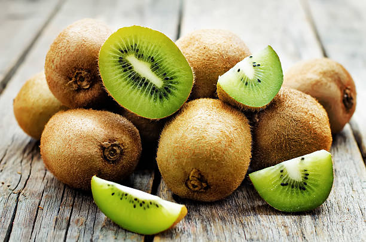
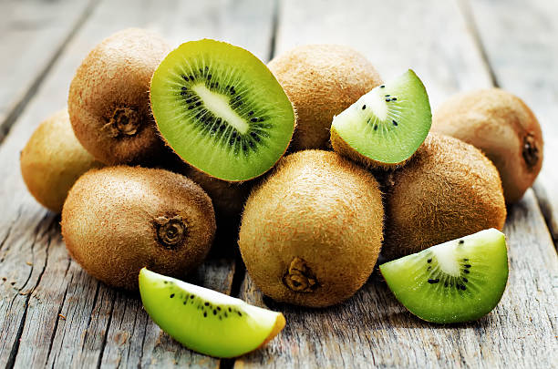
ENGLISH
1] Seed Selection:
Kiwi seeds are collected from mature and healthy fruits, which are thoroughly cleaned and allowed to dry for a day or two.
2] Soil Preparation::
Prepare the soil by digging pits or trenches, incorporating organic matter like compost or well-rotted manure.
3] Planting:
Plant kiwi vines during the dormant season, typically in late winter or early spring (February to March).
4] Irrigation:
Provide regular and adequate irrigation, especially during the growing season and fruiting period.
5] Pruning and Training:
As the kiwi tree grows, it should be pruned regularly to encourage a strong and open canopy, and to remove any diseased or damaged branches. kiwi trees can also be trained to a specific shape, such as a central leader or open vase, depending on the desired fruit production and tree size.
6] Flowering and Fruit Set:
kiwi trees typically begin to flower after 3-5 years of growth, depending on the variety and growing conditions. The flowers are pollinated by insects or by hand, and the fruit begins to develop shortly thereafter.
7] Harvesting and Storage:
kiwi fruits should be harvested when they are mature and fully colored, but still firm. They can be stored for a few days at room temperature or in the refrigerator, but are best eaten fresh.
Overall, growing kiwi requires patience, attention to detail, and a suitable climate and soil. With proper care, however, kiwi trees can provide abundant fruit for many years to come.
ENGLISH
తెలుగు
1] విత్తన ఎంపిక:
కివీ గింజలు పరిపక్వ మరియు ఆరోగ్యకరమైన పండ్ల నుండి సేకరిస్తారు, వీటిని పూర్తిగా శుభ్రం చేసి ఒకటి లేదా రెండు రోజులు పొడిగా ఉంచడానికి అనుమతిస్తారు.
2] నేల తయారీ::
కంపోస్ట్ లేదా బాగా కుళ్లిన ఎరువు వంటి సేంద్రియ పదార్థాలను కలుపుతూ గుంతలు లేదా కందకాలు తవ్వడం ద్వారా మట్టిని సిద్ధం చేయండి.
3] నాటడం:
నిద్రాణమైన కాలంలో, సాధారణంగా శీతాకాలం చివరిలో లేదా వసంతకాలం ప్రారంభంలో (ఫిబ్రవరి నుండి మార్చి వరకు) కివి తీగలను నాటండి.
4] నీటిపారుదల:
క్రమమైన మరియు తగినంత నీటిపారుదలని అందించండి, ముఖ్యంగా పెరుగుతున్న కాలంలో మరియు ఫలాలు కాస్తాయి.
5] కత్తిరింపు మరియు శిక్షణ:
కివి చెట్టు పెరిగేకొద్దీ, బలమైన మరియు బహిరంగ పందిరిని ప్రోత్సహించడానికి మరియు ఏదైనా వ్యాధిగ్రస్తులైన లేదా దెబ్బతిన్న కొమ్మలను తొలగించడానికి దానిని క్రమం తప్పకుండా కత్తిరించాలి. కావలసిన పండ్ల ఉత్పత్తి మరియు చెట్ల పరిమాణాన్ని బట్టి కివీ చెట్లకు సెంట్రల్ లీడర్ లేదా ఓపెన్ వాసే వంటి నిర్దిష్ట ఆకృతికి కూడా శిక్షణ ఇవ్వవచ్చు.
6] పుష్పించే మరియు పండ్ల సెట్:
కివి చెట్లు సాధారణంగా 3-5 సంవత్సరాల పెరుగుదల తర్వాత వివిధ మరియు పెరుగుతున్న పరిస్థితులపై ఆధారపడి పుష్పించడం ప్రారంభిస్తాయి. పువ్వులు కీటకాల ద్వారా లేదా చేతితో పరాగసంపర్కం చేయబడతాయి మరియు ఆ తర్వాత కొంతకాలానికి పండు అభివృద్ధి చెందడం ప్రారంభమవుతుంది.
7] హార్వెస్టింగ్ మరియు నిల్వ:
కివీ పండ్లు పరిపక్వత మరియు పూర్తిగా రంగులో ఉన్నప్పుడు, కానీ ఇప్పటికీ దృఢంగా ఉన్నప్పుడు పండించాలి. వాటిని గది ఉష్ణోగ్రత వద్ద లేదా రిఫ్రిజిరేటర్లో కొన్ని రోజులు నిల్వ చేయవచ్చు, అయితే వాటిని తాజాగా తింటే మంచిది.
మొత్తంమీద, పెరుగుతున్న కివికి సహనం, వివరాలకు శ్రద్ధ మరియు తగిన వాతావరణం మరియు నేల అవసరం. అయితే, సరైన సంరక్షణతో, కివి చెట్లు చాలా సంవత్సరాల పాటు సమృద్ధిగా ఫలాలను అందిస్తాయి.
తెలుగు
వినండి
25. PEACH / 25.పీచు పండు
ENGLISH
1] Seed Selection:
Peach seeds are collected from mature and healthy fruits, which are thoroughly cleaned and allowed to dry for a day or two.
2] Germination:
The Peach seeds are soaked in water for 24-48 hours to soften the hard outer shell. Once the seeds have swelled, they are planted in a pot filled with a mixture of soil and organic compost, and kept in a warm, sunny location.
3] Seedling Care:
Peach seedlings require regular watering and fertilization to ensure healthy growth. They should be kept in a well-draining soil, and protected from strong winds and frost.
4] Transplanting:
Once the Peach seedlings reach a height of 30-45 cm (12-18 inches), they can be transplanted to a larger pot or directly into the ground. Mango trees prefer a warm, humid climate and well-drained soil with a pH between 6.0 and 7.5.
5] Pruning and Training:
As the peach tree grows, it should be pruned regularly to encourage a strong and open canopy, and to remove any diseased or damaged branches. peach trees can also be trained to a specific shape, such as a central leader or open vase, depending on the desired fruit production and tree size.
6] Flowering and Fruit Set:
Peach trees typically begin to flower after 3-5 years of growth, depending on the variety and growing conditions. The flowers are pollinated by insects or by hand, and the fruit begins to develop shortly thereafter.
7] Harvesting and Storage:
Peach fruits should be harvested when they are mature and fully colored, but still firm. They can be stored for a few days at room temperature or in the refrigerator, but are best eaten fresh.
Overall, growing peach requires patience, attention to detail, and a suitable climate and soil. With proper care, however, peach trees can provide abundant fruit for many years to come.
ENGLISH
తెలుగు
1] విత్తన ఎంపిక:
పీచు గింజలు పరిపక్వ మరియు ఆరోగ్యకరమైన పండ్ల నుండి సేకరిస్తారు, వీటిని పూర్తిగా శుభ్రం చేసి ఒకటి లేదా రెండు రోజులు పొడిగా ఉంచడానికి అనుమతిస్తారు.
2] అంకురోత్పత్తి:
గట్టి బయటి కవచాన్ని మృదువుగా చేయడానికి పీచు గింజలను 24-48 గంటలు నీటిలో నానబెట్టాలి. విత్తనాలు ఉబ్బిన తర్వాత, వాటిని మట్టి మరియు సేంద్రీయ కంపోస్ట్ మిశ్రమంతో నింపిన ఒక కుండలో నాటారు మరియు వెచ్చగా, ఎండగా ఉండే ప్రదేశంలో ఉంచుతారు.
3] మొలకల సంరక్షణ:
ఆరోగ్యకరమైన పెరుగుదలను నిర్ధారించడానికి పీచు మొలకలకు క్రమం తప్పకుండా నీరు త్రాగుట మరియు ఫలదీకరణం అవసరం. వాటిని బాగా ఎండిపోయే మట్టిలో ఉంచాలి మరియు బలమైన గాలులు మరియు మంచు నుండి రక్షించబడాలి.
4] మార్పిడి:
పీచు మొలకలు 30-45 సెం.మీ (12-18 అంగుళాలు) ఎత్తుకు చేరుకున్న తర్వాత, వాటిని పెద్ద కుండలో లేదా నేరుగా భూమిలోకి నాటవచ్చు. మామిడి చెట్లు 6.0 మరియు 7.5 మధ్య pHతో వెచ్చని, తేమతో కూడిన వాతావరణం మరియు బాగా ఎండిపోయిన నేలను ఇష్టపడతాయి.
5] కత్తిరింపు మరియు శిక్షణ:
పీచు చెట్టు పెరిగేకొద్దీ, బలమైన మరియు బహిరంగ పందిరిని ప్రోత్సహించడానికి మరియు ఏదైనా వ్యాధిగ్రస్తులైన లేదా దెబ్బతిన్న కొమ్మలను తొలగించడానికి దానిని క్రమం తప్పకుండా కత్తిరించాలి. పీచు చెట్లకు కావలసిన పండ్ల ఉత్పత్తి మరియు చెట్ల పరిమాణాన్ని బట్టి సెంట్రల్ లీడర్ లేదా ఓపెన్ వాజ్ వంటి నిర్దిష్ట ఆకృతికి కూడా శిక్షణ ఇవ్వవచ్చు.
6] పుష్పించే మరియు పండ్ల సెట్:
పీచు చెట్లు సాధారణంగా వివిధ మరియు పెరుగుతున్న పరిస్థితుల ఆధారంగా 3-5 సంవత్సరాల పెరుగుదల తర్వాత పుష్పించడం ప్రారంభిస్తాయి. పువ్వులు కీటకాల ద్వారా లేదా చేతితో పరాగసంపర్కం చేయబడతాయి మరియు ఆ తర్వాత కొంతకాలానికి పండు అభివృద్ధి చెందడం ప్రారంభమవుతుంది.
7] హార్వెస్టింగ్ మరియు నిల్వ:
పీచు పండ్లు పరిపక్వత మరియు పూర్తిగా రంగులో ఉన్నప్పుడు, కానీ ఇప్పటికీ గట్టిగా ఉన్నప్పుడు వాటిని పండించాలి. వాటిని గది ఉష్ణోగ్రత వద్ద లేదా రిఫ్రిజిరేటర్లో కొన్ని రోజులు నిల్వ చేయవచ్చు, అయితే వాటిని తాజాగా తింటే మంచిది.
మొత్తంమీద, పెరుగుతున్న పీచుకు సహనం, వివరాలకు శ్రద్ధ మరియు తగిన వాతావరణం మరియు నేల అవసరం. అయితే, సరైన సంరక్షణతో, పీచు చెట్లు అనేక సంవత్సరాలపాటు సమృద్ధిగా ఫలాలను అందిస్తాయి.
తెలుగు
వినండి
26. APRICOT / 26.నేరేడు పండు

ENGLISH
1] Seed Selection:
Apricot seeds are collected from mature and healthy fruits, which are thoroughly cleaned and allowed to dry for a day or two.
2] Germination:
The Apricot seeds are soaked in water for 24-48 hours to soften the hard outer shell. Once the seeds have swelled, they are planted in a pot filled with a mixture of soil and organic compost, and kept in a warm, sunny location.
3] Seedling Care:
Apricot seedlings require regular watering and fertilization to ensure healthy growth. They should be kept in a well-draining soil, and protected from strong winds and frost.
4] Transplanting:
Apricot trees prefer a warm, humid climate and well-drained soil with a pH between 6.0 and 7.5.
5] Pruning and Training:
As the Apricot tree grows, it should be pruned regularly to encourage a strong and open canopy, and to remove any diseased or damaged branches. Apricot trees can also be trained to a specific shape, such as a central leader or open vase, depending on the desired fruit production and tree size.
6] Flowering and Fruit Set:
Apricot trees typically begin to flower after 3-5 years of growth, depending on the variety and growing conditions. The flowers are pollinated by insects or by hand, and the fruit begins to develop shortly thereafter.
7] Harvesting and Storage:
Apricot fruits should be harvested when they are mature and fully colored, but still firm. They can be stored for a few days at room temperature or in the refrigerator, but are best eaten fresh.
Overall, growing Apricot requires patience, attention to detail, and a suitable climate and soil. With proper care, however, Apricot trees can provide abundant fruit for many years to come.
ENGLISH
తెలుగు
1] విత్తన ఎంపిక:
నేరేడు పండు గింజలు పరిపక్వమైన మరియు ఆరోగ్యకరమైన పండ్ల నుండి సేకరిస్తారు, వీటిని పూర్తిగా శుభ్రం చేసి ఒకటి లేదా రెండు రోజులు పొడిగా ఉంచుతారు.
2] అంకురోత్పత్తి:
నేరేడు పండు గింజలను 24-48 గంటల పాటు నీటిలో నానబెట్టి గట్టి బయటి కవచాన్ని మృదువుగా చేస్తారు. విత్తనాలు ఉబ్బిన తర్వాత, వాటిని మట్టి మరియు సేంద్రీయ కంపోస్ట్ మిశ్రమంతో నింపిన కుండలో నాటారు మరియు వెచ్చని, ఎండ ఉన్న ప్రదేశంలో ఉంచుతారు.
3] మొలకల సంరక్షణ:
నేరేడు పండు మొలకల ఆరోగ్యకరమైన పెరుగుదలను నిర్ధారించడానికి క్రమం తప్పకుండా నీరు త్రాగుట మరియు ఫలదీకరణం అవసరం. వాటిని బాగా ఎండిపోయే మట్టిలో ఉంచాలి మరియు బలమైన గాలులు మరియు మంచు నుండి రక్షించబడాలి.
4] మార్పిడి:
ఆప్రికాట్ చెట్లు 6.0 మరియు 7.5 మధ్య pHతో వెచ్చని, తేమతో కూడిన వాతావరణం మరియు బాగా ఎండిపోయిన నేలను ఇష్టపడతాయి.
5] కత్తిరింపు మరియు శిక్షణ:
నేరేడు పండు చెట్టు పెరిగేకొద్దీ, బలమైన మరియు బహిరంగ పందిరిని ప్రోత్సహించడానికి మరియు ఏదైనా వ్యాధిగ్రస్తులైన లేదా దెబ్బతిన్న కొమ్మలను తొలగించడానికి దానిని క్రమం తప్పకుండా కత్తిరించాలి. ఆప్రికాట్ చెట్లకు కావలసిన పండ్ల ఉత్పత్తి మరియు చెట్ల పరిమాణాన్ని బట్టి సెంట్రల్ లీడర్ లేదా ఓపెన్ వాజ్ వంటి నిర్దిష్ట ఆకృతికి కూడా శిక్షణ ఇవ్వవచ్చు.
6] పుష్పించే మరియు పండ్ల సెట్:
నేరేడు చెట్లు సాధారణంగా 3-5 సంవత్సరాల పెరుగుదల తర్వాత వివిధ మరియు పెరుగుతున్న పరిస్థితులపై ఆధారపడి పుష్పించడం ప్రారంభిస్తాయి. పువ్వులు కీటకాల ద్వారా లేదా చేతితో పరాగసంపర్కం చేయబడతాయి మరియు ఆ తర్వాత కొంతకాలానికి పండు అభివృద్ధి చెందడం ప్రారంభమవుతుంది.
7] హార్వెస్టింగ్ మరియు నిల్వ:
నేరేడు పండు పక్వానికి వచ్చినప్పుడు మరియు పూర్తిగా రంగులో, కానీ ఇప్పటికీ గట్టిగా ఉన్నప్పుడు వాటిని పండించాలి. వాటిని గది ఉష్ణోగ్రత వద్ద లేదా రిఫ్రిజిరేటర్లో కొన్ని రోజులు నిల్వ చేయవచ్చు, అయితే వాటిని తాజాగా తింటే మంచిది.
మొత్తంమీద, నేరేడు పండు పెరగడానికి సహనం, వివరాలకు శ్రద్ధ మరియు తగిన వాతావరణం మరియు నేల అవసరం. అయితే, సరైన సంరక్షణతో, నేరేడు చెట్లు అనేక సంవత్సరాలపాటు సమృద్ధిగా ఫలాలను అందిస్తాయి.
తెలుగు
వినండి
27. AVACADO / 27.అవోకాడో పండు
ENGLISH
1] Seed Selection:
Avacado seeds are collected from mature and healthy fruits, which are thoroughly cleaned and allowed to dry for a day or two.
2] Germination:
The Avacado seeds are soaked in water for 24-48 hours to soften the hard outer shell. Once the seeds have swelled, they are planted in a pot filled with a mixture of soil and organic compost, and kept in a warm, sunny location.
3] Seedling Care:
Avacado seedlings require regular watering and fertilization to ensure healthy growth. They should be kept in a well-draining soil, and protected from strong winds and frost.
4] Transplanting:
Once the Avacado seedlings reach a height of 30-45 cm (12-18 inches), they can be transplanted to a larger pot or directly into the ground. Mango trees prefer a warm, humid climate and well-drained soil with a pH between 6.0 and 7.5.
5] Pruning and Training:
As the Avacado tree grows, it should be pruned regularly to encourage a strong and open canopy, and to remove any diseased or damaged branches. Avacado trees can also be trained to a specific shape, such as a central leader or open vase, depending on the desired fruit production and tree size.
6] Flowering and Fruit Set:
Avacado trees typically begin to flower after 3-5 years of growth, depending on the variety and growing conditions. The flowers are pollinated by insects or by hand, and the fruit begins to develop shortly thereafter.
7] Harvesting and Storage:
Avacado fruits should be harvested when they are mature and fully colored, but still firm. They can be stored for a few days at room temperature or in the refrigerator, but are best eaten fresh.
Overall, growing Avacado requires patience, attention to detail, and a suitable climate and soil. With proper care, however, avacado trees can provide abundant fruit for many years to come.
ENGLISH
తెలుగు
1] విత్తన ఎంపిక:
అవకాడో గింజలు పరిపక్వ మరియు ఆరోగ్యకరమైన పండ్ల నుండి సేకరిస్తారు, వీటిని పూర్తిగా శుభ్రం చేసి ఒకటి లేదా రెండు రోజులు పొడిగా ఉంచడానికి అనుమతిస్తారు.
2] అంకురోత్పత్తి:
గట్టి బయటి కవచాన్ని మృదువుగా చేయడానికి అవకాడో గింజలను 24-48 గంటల పాటు నీటిలో నానబెట్టాలి. విత్తనాలు ఉబ్బిన తర్వాత, వాటిని మట్టి మరియు సేంద్రీయ కంపోస్ట్ మిశ్రమంతో నింపిన కుండలో నాటారు మరియు వెచ్చని, ఎండ ఉన్న ప్రదేశంలో ఉంచుతారు.
3] మొలకల సంరక్షణ:
అవాకాడో మొలకల ఆరోగ్యకరమైన పెరుగుదలను నిర్ధారించడానికి క్రమం తప్పకుండా నీరు త్రాగుట మరియు ఫలదీకరణం అవసరం. వాటిని బాగా ఎండిపోయే మట్టిలో ఉంచాలి మరియు బలమైన గాలులు మరియు మంచు నుండి రక్షించబడాలి.
4] మార్పిడి:
అవకాడో మొలకలు 30-45 సెం.మీ (12-18 అంగుళాలు) ఎత్తుకు చేరుకున్న తర్వాత, వాటిని పెద్ద కుండలోకి లేదా నేరుగా భూమిలోకి నాటవచ్చు. మామిడి చెట్లు 6.0 మరియు 7.5 మధ్య pHతో వెచ్చని, తేమతో కూడిన వాతావరణం మరియు బాగా ఎండిపోయిన నేలను ఇష్టపడతాయి.
5] కత్తిరింపు మరియు శిక్షణ:
అవకాడో చెట్టు పెరిగేకొద్దీ, బలమైన మరియు బహిరంగ పందిరిని ప్రోత్సహించడానికి మరియు ఏదైనా వ్యాధిగ్రస్తులైన లేదా దెబ్బతిన్న కొమ్మలను తొలగించడానికి దానిని క్రమం తప్పకుండా కత్తిరించాలి. అవకాడో చెట్లకు కావలసిన పండ్ల ఉత్పత్తి మరియు చెట్ల పరిమాణాన్ని బట్టి సెంట్రల్ లీడర్ లేదా ఓపెన్ వాసే వంటి నిర్దిష్ట ఆకృతికి కూడా శిక్షణ ఇవ్వవచ్చు.
6] పుష్పించే మరియు పండ్ల సెట్:
అవకాడో చెట్లు సాధారణంగా 3-5 సంవత్సరాల పెరుగుదల తర్వాత వివిధ మరియు పెరుగుతున్న పరిస్థితులపై ఆధారపడి పుష్పించడం ప్రారంభిస్తాయి. పువ్వులు కీటకాల ద్వారా లేదా చేతితో పరాగసంపర్కం చేయబడతాయి మరియు ఆ తర్వాత కొంతకాలానికి పండు అభివృద్ధి చెందడం ప్రారంభమవుతుంది.
7] హార్వెస్టింగ్ మరియు నిల్వ:
అవకాడో పండ్లను అవి పరిపక్వంగా మరియు పూర్తిగా రంగులో, కానీ ఇప్పటికీ గట్టిగా ఉన్నప్పుడు పండించాలి. వాటిని గది ఉష్ణోగ్రత వద్ద లేదా రిఫ్రిజిరేటర్లో కొన్ని రోజులు నిల్వ చేయవచ్చు, అయితే వాటిని తాజాగా తింటే మంచిది.
మొత్తంమీద, పెరుగుతున్న అవకాడోకు సహనం, వివరాలకు శ్రద్ధ మరియు తగిన వాతావరణం మరియు నేల అవసరం. అయితే, సరైన సంరక్షణతో, అవకాడో చెట్లు చాలా సంవత్సరాల వరకు సమృద్ధిగా ఫలాలను అందిస్తాయి.
తెలుగు
వినండి
28. MULBERRY / 28.మల్బరీపండు
ENGLISH
1] Seed Selection:
mulberry seeds are collected from mature and healthy fruits, which are thoroughly cleaned and allowed to dry for a day or two.
2] Germination:
The mulberry seeds are soaked in water for 24-48 hours to soften the hard outer shell. Once the seeds have swelled, they are planted in a pot filled with a mixture of soil and organic compost, and kept in a warm, sunny location.
3] Seedling Care:
Mulberry seedlings require regular watering and fertilization to ensure healthy growth. They should be kept in a well-draining soil, and protected from strong winds and frost.
4] Transplanting:
Once the mulberry seedlings reach a height of 30-45 cm (12-18 inches), they can be transplanted to a larger pot or directly into the ground. Mulberry trees prefer a warm, humid climate and well-drained soil with a pH between 6.0 and 7.5.
5] Pruning and Training:
As the mulberry tree grows, it should be pruned regularly to encourage a strong and open canopy, and to remove any diseased or damaged branches. mulberry trees can also be trained to a specific shape, such as a central leader or open vase, depending on the desired fruit production and tree size.
6] Flowering and Fruit Set:
Mulberry trees typically begin to flower after 3-5 years of growth, depending on the variety and growing conditions. The flowers are pollinated by insects or by hand, and the fruit begins to develop shortly thereafter.
7] Harvesting and Storage:
Mulberry fruits should be harvested when they are mature and fully colored, but still firm. They can be stored for a few days at room temperature or in the refrigerator, but are best eaten fresh.
Overall, growing mulberry requires patience, attention to detail, and a suitable climate and soil. With proper care, however, mulberry trees can provide abundant fruit for many years to come.
ENGLISH
తెలుగు
1] విత్తన ఎంపిక:
మల్బరీ గింజలు పరిపక్వ మరియు ఆరోగ్యకరమైన పండ్ల నుండి సేకరిస్తారు, వీటిని పూర్తిగా శుభ్రం చేసి ఒకటి లేదా రెండు రోజులు పొడిగా ఉంచుతారు.
2] అంకురోత్పత్తి:
గట్టి బయటి కవచాన్ని మృదువుగా చేయడానికి మల్బరీ గింజలను నీటిలో 24-48 గంటలు నానబెట్టాలి. విత్తనాలు ఉబ్బిన తర్వాత, వాటిని మట్టి మరియు సేంద్రీయ కంపోస్ట్ మిశ్రమంతో నింపిన ఒక కుండలో నాటారు మరియు వెచ్చగా, ఎండగా ఉండే ప్రదేశంలో ఉంచుతారు.
3] మొలకల సంరక్షణ:
మల్బరీ మొలకల ఆరోగ్యకరమైన పెరుగుదలను నిర్ధారించడానికి క్రమం తప్పకుండా నీరు త్రాగుట మరియు ఫలదీకరణం అవసరం. వాటిని బాగా ఎండిపోయే మట్టిలో ఉంచాలి మరియు బలమైన గాలులు మరియు మంచు నుండి రక్షించబడాలి.
4] మార్పిడి:
మల్బరీ మొలకలు 30-45 సెం.మీ (12-18 అంగుళాలు) ఎత్తుకు చేరుకున్న తర్వాత, వాటిని పెద్ద కుండలో లేదా నేరుగా భూమిలోకి నాటవచ్చు. మల్బరీ చెట్లు 6.0 మరియు 7.5 మధ్య pHతో వెచ్చని, తేమతో కూడిన వాతావరణం మరియు బాగా ఎండిపోయిన నేలను ఇష్టపడతాయి.
5] కత్తిరింపు మరియు శిక్షణ:
మల్బరీ చెట్టు పెరిగేకొద్దీ, బలమైన మరియు బహిరంగ పందిరిని ప్రోత్సహించడానికి మరియు ఏదైనా వ్యాధిగ్రస్తులైన లేదా దెబ్బతిన్న కొమ్మలను తొలగించడానికి దానిని క్రమం తప్పకుండా కత్తిరించాలి. మల్బరీ చెట్లకు కావలసిన పండ్ల ఉత్పత్తి మరియు చెట్ల పరిమాణాన్ని బట్టి సెంట్రల్ లీడర్ లేదా ఓపెన్ వాజ్ వంటి నిర్దిష్ట ఆకృతికి కూడా శిక్షణ ఇవ్వవచ్చు.
6] పుష్పించే మరియు పండ్ల సెట్:
మల్బరీ చెట్లు సాధారణంగా వివిధ మరియు పెరుగుతున్న పరిస్థితులపై ఆధారపడి, 3-5 సంవత్సరాల పెరుగుదల తర్వాత పుష్పించడం ప్రారంభిస్తాయి. పువ్వులు కీటకాల ద్వారా లేదా చేతితో పరాగసంపర్కం చేయబడతాయి మరియు ఆ తర్వాత కొంతకాలానికి పండు అభివృద్ధి చెందడం ప్రారంభమవుతుంది.
7] హార్వెస్టింగ్ మరియు నిల్వ:
మల్బరీ పండ్లు పరిపక్వత మరియు పూర్తిగా రంగులో ఉన్నప్పుడు, కానీ ఇప్పటికీ దృఢంగా ఉన్నప్పుడు పండించాలి. వాటిని గది ఉష్ణోగ్రత వద్ద లేదా రిఫ్రిజిరేటర్లో కొన్ని రోజులు నిల్వ చేయవచ్చు, అయితే వాటిని తాజాగా తింటే మంచిది.
మొత్తంమీద, పెరుగుతున్న మల్బరీకి సహనం, వివరాలకు శ్రద్ధ మరియు తగిన వాతావరణం మరియు నేల అవసరం. అయితే, సరైన సంరక్షణతో, మల్బరీ చెట్లు అనేక సంవత్సరాలపాటు సమృద్ధిగా ఫలాలను అందిస్తాయి.
తెలుగు
వినండి
29. AMLA / 29.ఉసిరికాయ
ENGLISH
1] Seed Selection:
Amla seeds are collected from mature and healthy fruits, which are thoroughly cleaned and allowed to dry for a day or two.
2] Germination:
The amla seeds are soaked in water for 24-48 hours to soften the hard outer shell. Once the seeds have swelled, they are planted in a pot filled with a mixture of soil and organic compost, and kept in a warm, sunny location.
3] Seedling Care:
amla seedlings require regular watering and fertilization to ensure healthy growth. They should be kept in a well-draining soil, and protected from strong winds and frost.
4] Transplanting:
. amla trees prefer a warm, humid climate and well-drained soil with a pH between 6.0 and 7.5.
5] Pruning and Training:
As the amla tree grows, it should be pruned regularly to encourage a strong and open canopy, and to remove any diseased or damaged branches. amla trees can also be trained to a specific shape, such as a central leader or open vase, depending on the desired fruit production and tree size.
6] Flowering and Fruit Set:
amla trees typically begin to flower after 3-5 years of growth, depending on the variety and growing conditions. The flowers are pollinated by insects or by hand, and the fruit begins to develop shortly thereafter.
7] Harvesting and Storage:
amla fruits should be harvested when they are mature and fully colored, but still firm. They can be stored for a few days at room temperature or in the refrigerator, but are best eaten fresh.
Overall, growing amla requires patience, attention to detail, and a suitable climate and soil. With proper care, however, amla trees can provide abundant fruit for many years to come.
ENGLISH
తెలుగు
1] విత్తన ఎంపిక:
ఉసిరి గింజలు పరిపక్వ మరియు ఆరోగ్యకరమైన పండ్ల నుండి సేకరిస్తారు, వీటిని పూర్తిగా శుభ్రం చేసి ఒకటి లేదా రెండు రోజులు పొడిగా ఉంచుతారు.
2] అంకురోత్పత్తి:
గట్టి బయటి కవచాన్ని మృదువుగా చేయడానికి ఉసిరి గింజలను 24-48 గంటలు నీటిలో నానబెట్టాలి. విత్తనాలు ఉబ్బిన తర్వాత, వాటిని మట్టి మరియు సేంద్రీయ కంపోస్ట్ మిశ్రమంతో నింపిన కుండలో నాటారు మరియు వెచ్చని, ఎండ ఉన్న ప్రదేశంలో ఉంచుతారు.
3] మొలకల సంరక్షణ:
ఉసిరి మొలకల ఆరోగ్యకరమైన పెరుగుదలను నిర్ధారించడానికి క్రమం తప్పకుండా నీరు త్రాగుట మరియు ఫలదీకరణం అవసరం. వాటిని బాగా ఎండిపోయే మట్టిలో ఉంచాలి మరియు బలమైన గాలులు మరియు మంచు నుండి రక్షించబడాలి.
4] మార్పిడి:
. ఉసిరి చెట్లు 6.0 మరియు 7.5 మధ్య pHతో వెచ్చని, తేమతో కూడిన వాతావరణం మరియు బాగా ఎండిపోయిన నేలను ఇష్టపడతాయి.
5] కత్తిరింపు మరియు శిక్షణ:
ఉసిరి చెట్టు పెరిగేకొద్దీ, బలమైన మరియు బహిరంగ పందిరిని ప్రోత్సహించడానికి మరియు ఏదైనా వ్యాధిగ్రస్తులైన లేదా దెబ్బతిన్న కొమ్మలను తొలగించడానికి దానిని క్రమం తప్పకుండా కత్తిరించాలి. ఉసిరి చెట్లకు కావలసిన పండ్ల ఉత్పత్తి మరియు చెట్ల పరిమాణాన్ని బట్టి సెంట్రల్ లీడర్ లేదా ఓపెన్ వాసే వంటి నిర్దిష్ట ఆకృతికి కూడా శిక్షణ ఇవ్వవచ్చు.
6] పుష్పించే మరియు పండ్ల సెట్:
ఉసిరి చెట్లు సాధారణంగా 3-5 సంవత్సరాల పెరుగుదల తర్వాత వివిధ మరియు పెరుగుతున్న పరిస్థితులపై ఆధారపడి పుష్పించడం ప్రారంభిస్తాయి. పువ్వులు కీటకాల ద్వారా లేదా చేతితో పరాగసంపర్కం చేయబడతాయి మరియు ఆ తర్వాత కొంతకాలానికి పండు అభివృద్ధి చెందడం ప్రారంభమవుతుంది.
7] హార్వెస్టింగ్ మరియు నిల్వ:
ఉసిరి పండ్లను అవి పరిపక్వంగా మరియు పూర్తిగా రంగులో, కానీ ఇప్పటికీ గట్టిగా ఉన్నప్పుడు పండించాలి. వాటిని గది ఉష్ణోగ్రత వద్ద లేదా రిఫ్రిజిరేటర్లో కొన్ని రోజులు నిల్వ చేయవచ్చు, అయితే వాటిని తాజాగా తింటే మంచిది.
మొత్తంమీద, ఉసిరికాయను పెంచడానికి సహనం, వివరాలకు శ్రద్ధ మరియు తగిన వాతావరణం మరియు నేల అవసరం. అయితే, సరైన సంరక్షణతో, ఉసిరి చెట్లు చాలా సంవత్సరాల పాటు సమృద్ధిగా ఫలాలను అందిస్తాయి.
తెలుగు
వినండి
30. BAEL FRUIT / 30. మారేడు పండు

ENGLISH
1] Seed Selection:
Bael seeds are collected from mature and healthy fruits, which are thoroughly cleaned and allowed to dry for a day or two.
2] Germination:
The Bael seeds are soaked in water for 24-48 hours to soften the hard outer shell. Once the seeds have swelled, they are planted in a pot filled with a mixture of soil and organic compost, and kept in a warm, sunny location.
3] Seedling Care:
Bael seedlings require regular watering and fertilization to ensure healthy growth. They should be kept in a well-draining soil, and protected from strong winds and frost.
4] Transplanting:
Once the Bael seedlings reach a height of 30-45 cm (12-18 inches), they can be transplanted to a larger pot or directly into the ground. Bael trees prefer a warm, humid climate and well-drained soil with a pH between 6.0 and 7.5.
5] Pruning and Training:
As the bael tree grows, it should be pruned regularly to encourage a strong and open canopy, and to remove any diseased or damaged branches. Bael trees can also be trained to a specific shape, such as a central leader or open vase, depending on the desired fruit production and tree size.
6] Flowering and Fruit Set:
Bael trees typically begin to flower after 3-5 years of growth, depending on the variety and growing conditions. The flowers are pollinated by insects or by hand, and the fruit begins to develop shortly thereafter.
7] Harvesting and Storage:
Bael fruits should be harvested when they are mature and fully colored, but still firm. They can be stored for a few days at room temperature or in the refrigerator, but are best eaten fresh.
Overall, growing Bael requires patience, attention to detail, and a suitable climate and soil. With proper care, however, bael trees can provide abundant fruit for many years to come.
ENGLISH
తెలుగు
1] విత్తన ఎంపిక:
బేల్ గింజలు పరిపక్వ మరియు ఆరోగ్యకరమైన పండ్ల నుండి సేకరిస్తారు, వీటిని పూర్తిగా శుభ్రం చేసి ఒకటి లేదా రెండు రోజులు పొడిగా ఉంచుతారు.
2] అంకురోత్పత్తి:
గట్టి బయటి కవచాన్ని మృదువుగా చేయడానికి బేల్ గింజలను 24-48 గంటలు నీటిలో నానబెట్టాలి. విత్తనాలు ఉబ్బిన తర్వాత, వాటిని మట్టి మరియు సేంద్రీయ కంపోస్ట్ మిశ్రమంతో నింపిన ఒక కుండలో నాటారు మరియు వెచ్చగా, ఎండగా ఉండే ప్రదేశంలో ఉంచుతారు.
3] మొలకల సంరక్షణ:
ఆరోగ్యకరమైన పెరుగుదలను నిర్ధారించడానికి బేల్ మొలకలకి క్రమం తప్పకుండా నీరు త్రాగుట మరియు ఫలదీకరణం అవసరం. వాటిని బాగా ఎండిపోయే మట్టిలో ఉంచాలి మరియు బలమైన గాలులు మరియు మంచు నుండి రక్షించబడాలి.
4] మార్పిడి:
బేల్ మొలకలు 30-45 సెం.మీ (12-18 అంగుళాలు) ఎత్తుకు చేరుకున్న తర్వాత, వాటిని పెద్ద కుండలో లేదా నేరుగా భూమిలోకి నాటవచ్చు. బేల్ చెట్లు 6.0 మరియు 7.5 మధ్య pHతో వెచ్చని, తేమతో కూడిన వాతావరణం మరియు బాగా ఎండిపోయిన నేలను ఇష్టపడతాయి.
5] కత్తిరింపు మరియు శిక్షణ:
బేల్ చెట్టు పెరిగేకొద్దీ, బలమైన మరియు బహిరంగ పందిరిని ప్రోత్సహించడానికి మరియు ఏదైనా వ్యాధిగ్రస్తులైన లేదా దెబ్బతిన్న కొమ్మలను తొలగించడానికి దానిని క్రమం తప్పకుండా కత్తిరించాలి. బేల్ చెట్లకు కావలసిన పండ్ల ఉత్పత్తి మరియు చెట్ల పరిమాణాన్ని బట్టి సెంట్రల్ లీడర్ లేదా ఓపెన్ వాసే వంటి నిర్దిష్ట ఆకృతికి కూడా శిక్షణ ఇవ్వవచ్చు.
6] పుష్పించే మరియు పండ్ల సెట్:
బేల్ చెట్లు సాధారణంగా 3-5 సంవత్సరాల పెరుగుదల తర్వాత వివిధ మరియు పెరుగుతున్న పరిస్థితులపై ఆధారపడి పుష్పించడం ప్రారంభిస్తాయి. పువ్వులు కీటకాల ద్వారా లేదా చేతితో పరాగసంపర్కం చేయబడతాయి మరియు ఆ తర్వాత కొంతకాలానికి పండు అభివృద్ధి చెందడం ప్రారంభమవుతుంది.
7] హార్వెస్టింగ్ మరియు నిల్వ:
బేల్ పండ్లను అవి పరిపక్వంగా మరియు పూర్తిగా రంగులో, కానీ ఇప్పటికీ గట్టిగా ఉన్నప్పుడు పండించాలి. వాటిని గది ఉష్ణోగ్రత వద్ద లేదా రిఫ్రిజిరేటర్లో కొన్ని రోజులు నిల్వ చేయవచ్చు, అయితే వాటిని తాజాగా తింటే మంచిది.
మొత్తంమీద, బేల్ పెరగడానికి సహనం, వివరాలకు శ్రద్ధ మరియు తగిన వాతావరణం మరియు నేల అవసరం. అయితే, సరైన సంరక్షణతో, బేల్ చెట్లు చాలా సంవత్సరాల పాటు సమృద్ధిగా ఫలాలను అందిస్తాయి.
తెలుగు
వినండి
31. CASHEW / 31.జీడిపప్పు
ENGLISH
1] Seed Selection:
Cashew seeds are collected from mature and healthy fruits, which are thoroughly cleaned and allowed to dry for a day or two.
2] Germination:
The cashew seeds are soaked in water for 24-48 hours to soften the hard outer shell. Once the seeds have swelled, they are planted in a pot filled with a mixture of soil and organic compost, and kept in a warm, sunny location.
3] Seedling Care:
Cashew seedlings require regular watering and fertilization to ensure healthy growth. They should be kept in a well-draining soil, and protected from strong winds and frost.
4] Transplanting:
Once the cashew seedlings reach a height of 30-45 cm (12-18 inches), they can be transplanted to a larger pot or directly into the ground. Cashew trees prefer a warm, humid climate and well-drained soil with a pH between 6.0 and 7.5.
5] Pruning and Training:
As the Cashew tree grows, it should be pruned regularly to encourage a strong and open canopy, and to remove any diseased or damaged branches. Cashew trees can also be trained to a specific shape, such as a central leader or open vase, depending on the desired fruit production and tree size.
6] Flowering and Fruit Set:
Cashew trees typically begin to flower after 3-5 years of growth, depending on the variety and growing conditions. The flowers are pollinated by insects or by hand, and the fruit begins to develop shortly thereafter.
7] Harvesting and Storage:
Cashew fruits should be harvested when they are mature and fully colored, but still firm. They can be stored for a few days at room temperature or in the refrigerator.
ENGLISH
తెలుగు
1] విత్తన ఎంపిక:
జీడిపప్పు గింజలు పరిపక్వమైన మరియు ఆరోగ్యకరమైన పండ్ల నుండి సేకరిస్తారు, వీటిని పూర్తిగా శుభ్రం చేసి ఒకటి లేదా రెండు రోజులు పొడిగా ఉంచుతారు.
2] అంకురోత్పత్తి:
గట్టి బయటి కవచాన్ని మృదువుగా చేయడానికి జీడిపప్పు గింజలను 24-48 గంటలు నీటిలో నానబెట్టాలి. విత్తనాలు ఉబ్బిన తర్వాత, వాటిని మట్టి మరియు సేంద్రీయ కంపోస్ట్ మిశ్రమంతో నింపిన కుండలో నాటారు మరియు వెచ్చని, ఎండ ఉన్న ప్రదేశంలో ఉంచుతారు.
3] మొలకల సంరక్షణ:
జీడిపప్పు మొలకలు ఆరోగ్యకరమైన పెరుగుదలను నిర్ధారించడానికి క్రమం తప్పకుండా నీరు త్రాగుట మరియు ఫలదీకరణం అవసరం. వాటిని బాగా ఎండిపోయే మట్టిలో ఉంచాలి మరియు బలమైన గాలులు మరియు మంచు నుండి రక్షించబడాలి.
4] మార్పిడి:
జీడి మొలకలు 30-45 సెం.మీ (12-18 అంగుళాలు) ఎత్తుకు చేరుకున్న తర్వాత, వాటిని పెద్ద కుండలో లేదా నేరుగా భూమిలోకి నాటవచ్చు. మామిడి చెట్లు 6.0 మరియు 7.5 మధ్య pHతో వెచ్చని, తేమతో కూడిన వాతావరణం మరియు బాగా ఎండిపోయిన నేలను ఇష్టపడతాయి.
5] కత్తిరింపు మరియు శిక్షణ:
జీడి చెట్టు పెరిగేకొద్దీ, బలమైన మరియు బహిరంగ పందిరిని ప్రోత్సహించడానికి మరియు ఏదైనా వ్యాధిగ్రస్తులైన లేదా దెబ్బతిన్న కొమ్మలను తొలగించడానికి దానిని క్రమం తప్పకుండా కత్తిరించాలి. మామిడి చెట్లకు కావలసిన పండ్ల ఉత్పత్తి మరియు చెట్ల పరిమాణాన్ని బట్టి సెంట్రల్ లీడర్ లేదా ఓపెన్ వాసే వంటి నిర్దిష్ట ఆకృతికి కూడా శిక్షణ ఇవ్వవచ్చు.
6] పుష్పించే మరియు పండ్ల సెట్:
జీడిపప్పు చెట్లు సాధారణంగా 3-5 సంవత్సరాల పెరుగుదల తర్వాత వివిధ మరియు పెరుగుతున్న పరిస్థితులపై ఆధారపడి పుష్పించడం ప్రారంభిస్తాయి. పువ్వులు కీటకాల ద్వారా లేదా చేతితో పరాగసంపర్కం చేయబడతాయి మరియు ఆ తర్వాత కొంతకాలానికి పండు అభివృద్ధి చెందడం ప్రారంభమవుతుంది.
7] హార్వెస్టింగ్ మరియు నిల్వ:
జీడిపండ్లు పక్వానికి వచ్చినప్పుడు మరియు పూర్తిగా రంగులోకి మారినప్పుడు వాటిని పండించాలి. వాటిని గది ఉష్ణోగ్రత వద్ద లేదా రిఫ్రిజిరేటర్లో కొన్ని రోజులు నిల్వ చేయవచ్చు.
తెలుగు
వినండి
32. DATEPALM / 32. ఖర్జూరం
ENGLISH
1] Seed Selection:
Datepalm seeds are collected from mature and healthy fruits, which are thoroughly cleaned and allowed to dry for a day or two.
2] Germination:
The Datepalm seeds are soaked in water for 24-48 hours to soften the hard outer shell. Once the seeds have swelled, they are planted in a pot filled with a mixture of soil and organic compost, and kept in a warm, sunny location.
3] Seedling Care:
Datepalm seedlings require regular watering and fertilization to ensure healthy growth. They should be kept in a well-draining soil, and protected from strong winds and frost.
4] Transplanting:
Once the Datepalm seedlings reach a height of 30-45 cm (12-18 inches), they can be transplanted to a larger pot or directly into the ground. Datepalm trees prefer a warm, humid climate and well-drained soil with a pH between 6.0 and 7.5.
5] Pruning and Training:
As the Datepalm tree grows, it should be pruned regularly to encourage a strong and open canopy, and to remove any diseased or damaged branches. Datepalm trees can also be trained to a specific shape, such as a central leader or open vase, depending on the desired fruit production and tree size.
6] Flowering and Fruit Set:
Datepalm trees typically begin to flower after 3-5 years of growth, depending on the variety and growing conditions. The flowers are pollinated by insects or by hand, and the fruit begins to develop shortly thereafter.
7] Harvesting and Storage:
Datepalm fruits should be harvested when they are mature and fully colored, but still firm. They can be stored for a few days at room temperature or in the refrigerator, but are best eaten fresh.
Overall, growing datepalm requires patience, attention to detail, and a suitable climate and soil. With proper care, however, Datepalm trees can provide abundant fruit for many years to come.
ENGLISH
తెలుగు
1] విత్తన ఎంపిక:
ఖర్జూరం గింజలు పరిపక్వ మరియు ఆరోగ్యకరమైన పండ్ల నుండి సేకరించబడతాయి, వీటిని పూర్తిగా శుభ్రం చేసి ఒకటి లేదా రెండు రోజులు పొడిగా ఉంచుతారు.
2] అంకురోత్పత్తి:
ఖర్జూరం గింజలను 24-48 గంటల పాటు నీటిలో నానబెట్టి గట్టి బయటి కవచాన్ని మృదువుగా చేస్తారు. విత్తనాలు ఉబ్బిన తర్వాత, వాటిని మట్టి మరియు సేంద్రీయ కంపోస్ట్ మిశ్రమంతో నింపిన ఒక కుండలో నాటారు మరియు వెచ్చగా, ఎండగా ఉండే ప్రదేశంలో ఉంచుతారు.
3] మొలకల సంరక్షణ:
ఖర్జూరపు మొలకలు ఆరోగ్యకరమైన పెరుగుదలను నిర్ధారించడానికి క్రమం తప్పకుండా నీరు త్రాగుట మరియు ఫలదీకరణం అవసరం. వాటిని బాగా ఎండిపోయే మట్టిలో ఉంచాలి మరియు బలమైన గాలులు మరియు మంచు నుండి రక్షించబడాలి.
4] మార్పిడి:
ఖర్జూరపు మొలకలు 30-45 సెం.మీ (12-18 అంగుళాలు) ఎత్తుకు చేరుకున్న తర్వాత, వాటిని పెద్ద కుండలో లేదా నేరుగా భూమిలోకి నాటవచ్చు. ఖర్జూర చెట్లు 6.0 మరియు 7.5 మధ్య pHతో వెచ్చని, తేమతో కూడిన వాతావరణం మరియు బాగా ఎండిపోయిన నేలను ఇష్టపడతాయి.
5] కత్తిరింపు మరియు శిక్షణ:
ఖర్జూర చెట్టు పెరిగేకొద్దీ, బలమైన మరియు బహిరంగ పందిరిని ప్రోత్సహించడానికి మరియు ఏదైనా వ్యాధిగ్రస్తులైన లేదా దెబ్బతిన్న కొమ్మలను తొలగించడానికి దానిని క్రమం తప్పకుండా కత్తిరించాలి. ఖర్జూర చెట్లకు కావలసిన పండ్ల ఉత్పత్తి మరియు చెట్ల పరిమాణాన్ని బట్టి సెంట్రల్ లీడర్ లేదా ఓపెన్ వాజ్ వంటి నిర్దిష్ట ఆకృతికి కూడా శిక్షణ ఇవ్వవచ్చు.
6] పుష్పించే మరియు పండ్ల సెట్:
ఖర్జూర చెట్లు సాధారణంగా 3-5 సంవత్సరాల పెరుగుదల తర్వాత వివిధ మరియు పెరుగుతున్న పరిస్థితులపై ఆధారపడి పుష్పించడం ప్రారంభిస్తాయి. పువ్వులు కీటకాల ద్వారా లేదా చేతితో పరాగసంపర్కం చేయబడతాయి మరియు ఆ తర్వాత కొంతకాలానికి పండు అభివృద్ధి చెందడం ప్రారంభమవుతుంది.
7] హార్వెస్టింగ్ మరియు నిల్వ:
ఖర్జూర పండ్లను అవి పరిపక్వంగా మరియు పూర్తిగా రంగులో, కానీ ఇప్పటికీ గట్టిగా ఉన్నప్పుడు పండించాలి. వాటిని గది ఉష్ణోగ్రత వద్ద లేదా రిఫ్రిజిరేటర్లో కొన్ని రోజులు నిల్వ చేయవచ్చు, అయితే వాటిని తాజాగా తింటే మంచిది.
మొత్తంమీద, పెరుగుతున్న ఖర్జూరానికి సహనం, వివరాలకు శ్రద్ధ మరియు తగిన వాతావరణం మరియు నేల అవసరం. అయితే, సరైన సంరక్షణతో, ఖర్జూరం చెట్లు చాలా సంవత్సరాల పాటు సమృద్ధిగా ఫలాలను అందిస్తాయి.
తెలుగు
వినండి
33. TAMARIND / 33. చింతపండు